Latest reporting
Credit Counseling vs. Debt Settlement vs. Credit Repair: The CFPB’s Differences
Counselors are usually nonprofits. Settlement and repair companies are typically for-profit and charge for steps you can take yourself for free.
By Kseniya Dzigava · October 13, 2026 at 7:30 PM EDT
Charged an Overdraft Fee? Opt-In Rules for Debit Cards, and Where They Do Not Apply
Banks cannot charge overdraft fees on one-time debit and ATM transactions unless you opted in, but checks and recurring payments are different.
By Kseniya Dzigava · October 13, 2026 at 7:29 PM EDT
What Happens If Your Car Is Repossessed? Your Rights, Per the CFPB
Notice rules vary by state. Lenders may not “breach the peace,” and a repossession can stay on your credit reports for up to seven years.
By Kseniya Dzigava · October 13, 2026 at 7:28 PM EDT
Medical Bill Sent to Collections? What the CFPB Says About Surprise-Bill Limits and Credit Reporting
Collecting or reporting amounts above what the No Surprises Act permits may violate federal law. Dispute in writing as soon as possible.
By Kseniya Dzigava · October 13, 2026 at 7:27 PM EDT
How to Dispute an Error on Your Credit Report, Step by Step (CFPB)
Dispute with the credit reporting company first, then with the company that supplied the information. Furnishers generally must respond within 30 days.
By Kseniya Dzigava · October 13, 2026 at 7:26 PM EDT
Can a Debt Collector Garnish Your Wages or Benefits? What the CFPB Says
Most creditors need a court judgment first. Banks must protect two months of directly deposited federal benefits.
By Kseniya Dzigava · October 13, 2026 at 7:25 PM EDT
Sued by a Debt Collector? Why Responding Matters, Per the CFPB
If you do not respond by the date in the court papers, a default judgment can follow, opening the door to garnishment, liens and frozen accounts.
By Kseniya Dzigava · October 13, 2026 at 7:24 PM EDT
Can Collectors Chase a Debt That Is Several Years Old? What the CFPB Says About Time Limits
Debts do not generally expire, but most states limit lawsuits to three to six years. A partial payment may restart the clock.
By Kseniya Dzigava · October 13, 2026 at 7:23 PM EDT
What a Debt Validation Notice Must Include, and the 30-Day Window to Dispute
The CFPB lists the information a collector generally must send, and says a written dispute inside 30 days pauses collection until they respond.
By Kseniya Dzigava · October 13, 2026 at 7:22 PM EDT
What to Do When a Debt Collector Contacts You, According to the CFPB
Collectors generally must give validation information within five days of first contact. Ignoring a valid debt usually will not make it go away.
By Kseniya Dzigava · October 13, 2026 at 7:21 PM EDT
Michigan Unemployment Agency Warns: It Never Charges a Fee to Release Benefits
The UIA’s Cybersecurity Awareness Month tips cover fake calls, texts and emails, password hygiene and where to report unemployment fraud.
By Kseniya Dzigava · October 13, 2026 at 7:11 PM EDT
IRS Tax Relief for Indiana Storm and Flood Victims: Deadlines Postponed to Feb. 1, 2027
The IRS news release was updated October 8 to add more counties. Late penalties in the postponement period can be abated by calling the notice number.
By Kseniya Dzigava · October 13, 2026 at 5:13 PM EDT
Minnesota AG Tells Regulators Utility Affordability Means Paying Bills Without Sacrificing Health, Safety or Dignity
Keith Ellison spoke at the Public Utilities Commission’s first session in a statewide investigation of electric and gas affordability.
By Kseniya Dzigava · October 13, 2026 at 5:12 PM EDT
North Carolina AG Launches Fuel Check as State Gas Tax Is Suspended Through Nov. 30
Drivers can report stations that do not pass along the 41-cent-per-gallon savings at ncdoj.gov/ncfuelcheck or 1-877-5-NO-SCAM.
By Kseniya Dzigava · October 13, 2026 at 5:11 PM EDT
FTC Alert: Sextortion “Help” Services Charged Thousands and Did Not Deliver, Agency Alleges
The FTC’s consumer alert names Digital Forensics and lists free steps for victims, including the 48-hour Take It Down rule.
By Kseniya Dzigava · October 13, 2026 at 4:56 PM EDT
Can’t Afford Your Student Loan Payment? What Federal Student Aid Says About Deferment and Forbearance
The agency says to contact your servicer, but warns that interest can still accrue and discharge progress can be affected.
By Kseniya Dzigava · October 13, 2026 at 4:55 PM EDT
How Federal Student Loan Payments Are Calculated Under IBR, PAYE, RAP and Standard Plans
Federal Student Aid lists the payment formula and repayment period for each plan open to former SAVE borrowers.
By Kseniya Dzigava · October 13, 2026 at 4:54 PM EDT
SAVE Plan Borrowers Have 90 Days to Pick a New Repayment Plan, Federal Student Aid Says
Servicers began sending notices July 1, 2026. Borrowers who miss the final 30-day notice are placed in a fixed payment plan.
By Kseniya Dzigava · October 13, 2026 at 4:53 PM EDT
DOJ: Actions Against North Korean Remote IT Worker Schemes Affecting More Than 70 U.S. Companies
Prosecutors announced an indictment, two arrests and the seizure of about 187 computers from suspected laptop farms in Texas.
By Kseniya Dzigava · October 13, 2026 at 4:54 PM EDT
FTC and States Ask Court to Hold Martin Shkreli in Contempt of Industry Ban
The coalition alleges he traded and commented on pharma stocks in violation of a 2022 order that also required $64 million in disgorgement.
By Kseniya Dzigava · October 13, 2026 at 4:53 PM EDT
Pennsylvania AG Charges Ex-Adjuster in $949,639 Fake Accident Claim Scheme
Prosecutors say Glenn Allen Johnson set up a sham law firm and used his insurer job to approve a payment to it.
By Kseniya Dzigava · October 13, 2026 at 4:52 PM EDT
Michigan Regulators Share Tips to Avoid Scams During Medicare Open Enrollment
Open enrollment runs October 15 to December 7. Officials say never give your Medicare number to unsolicited callers and call 1-800-MEDICARE to verify.
By Kseniya Dzigava · October 13, 2026 at 4:51 PM EDT
Wagner Equipment to Pay $200,000 to Settle EEOC Disability and Retaliation Suit
The EEOC says the company required a 100-pound lift test that did not match the job and refused to let an employee return from medical leave.
By Kseniya Dzigava · October 13, 2026 at 4:50 PM EDT
Il Fornaio to Pay $3 Million to Settle EEOC Sexual Harassment Suit
The EEOC says at least 100 women, many of them teenagers, were affected across the chain’s California and Nevada restaurants.
By Kseniya Dzigava · October 13, 2026 at 4:49 PM EDT
OFAC Settles With Freight Forwarder Pegasus Worldwide Logistics for $175,015
Treasury says Pegasus dealt in blocked property and took six months to fully answer an OFAC subpoena. OFAC called the conduct non-egregious.
By Kseniya Dzigava · October 13, 2026 at 4:48 PM EDT
Tennessee Joins 45-State Generic Drug Settlements With Ascend, Citron and Mayne
Ascend would pay $400,000 and Mayne $650,000. The states’ first trial is set for February 2027 in Hartford.
By Kseniya Dzigava · October 13, 2026 at 4:47 PM EDT
Pennsylvania AG Sues Insulin Makers and PBMs Over Alleged Price Manipulation
The complaint names Eli Lilly, Novo Nordisk, Sanofi, Express Scripts, CVS Caremark and Optum Rx. It seeks restitution for Pennsylvanians.
By Kseniya Dzigava · October 13, 2026 at 4:46 PM EDT
Cape Cod Man Pleads Guilty to Laundering Proceeds of $6 Million Medicare Equipment Fraud
DOJ says Advanced Medical Supply billed Medicare for braces patients never ordered. Beneficiaries mailed boxes back with notes calling it a scam.
By Kseniya Dzigava · October 13, 2026 at 4:45 PM EDT
DOJ: “Joint Disruption Week” Hits West African Scam Networks, 3.7 Million Accounts Removed
Law enforcement made 28 arrests in Ghana and Nigeria. Private partners say they flagged over $11 million in potentially freezable funds.
By Kseniya Dzigava · October 13, 2026 at 4:44 PM EDT
CVS Agrees to Pay $315 Million Over Opioid Prescriptions and False Claims, DOJ Says
The settlement covers October 2013 through December 2025. CVS must add safeguards, including monitoring of opioid prescribing patterns.
By Kseniya Dzigava · October 13, 2026 at 4:43 PM EDT
Pennsylvania AG Settles With Mavis Tire for $215,000 Over Alleged Unnecessary Repairs
Consumers who believe they were billed for services they did not need have until January 26, 2027 to file a complaint for restitution.
By Kseniya Dzigava · October 12, 2026 at 9:04 PM EDT
White House Says Nearly 70 Million Trump Accounts Created, Parents Must Claim Them
The administration reports $4.5 billion deposited since July 4. Family contributions are capped at $5,000 a year and employer contributions at $2,500.
By Kseniya Dzigava · October 12, 2026 at 9:03 PM EDT
FTC, Utah and Nevada Sue Lens.com Over Hidden “Taxes & Fees” on Contact Lenses
The complaint alleges a mandatory charge buried at checkout often doubles the advertised price. Lens.com’s AutoRefill plan is also challenged.
By Kseniya Dzigava · October 12, 2026 at 9:02 PM EDT
DOJ Fraud Division Directive 26-13 Calls for Early Asset Seizures and Infrastructure Takedowns
Assistant Attorney General Colin McDonald’s memo tells prosecutors to use tax, securities, consumer fraud and cyber authorities together.
By Kseniya Dzigava · October 12, 2026 at 9:01 PM EDT
Treasury’s OFAC Removes 125 Names From Sanctions Lists in Third Modernization Round
OFAC also updated 22 entries to improve compliance screening. Removed entries include deceased people, defunct companies and entries lacking identifying information.
By Kseniya Dzigava · October 12, 2026 at 9:00 PM EDT
OCC Lets National Banks Close Offices in Areas Hit by Hurricane Isaias
The proclamation covers affected areas of Alabama and Mississippi. The OCC expects only directly affected offices to close and reopen quickly.
By Kseniya Dzigava · October 12, 2026 at 8:59 PM EDT
New York AG Indicts Queens Pharmacy Owner Over Alleged $31 Million Medicaid and ADAP Fraud
Letitia James says Miguel Baron paid cash kickbacks and billed for medications never dispensed. A civil forfeiture action seeks over $95 million.
By Kseniya Dzigava · October 12, 2026 at 9:03 PM EDT
CMS Publishes 2027 Medicare Advantage and Part D Star Ratings Ahead of Open Enrollment
CMS says about 37% of MA-PD contracts earned four stars or higher. Open enrollment runs October 15 to December 7, 2026.
By Kseniya Dzigava · October 12, 2026 at 9:02 PM EDT
FDA Updates Salmonella Outbreak Investigation Tied to Recalled Broccoli Sprouting Seeds
The FDA says not to use recalled lots from Gardeners Basics, Eden Brothers and Home Grown. The investigation is ongoing.
By Kseniya Dzigava · October 12, 2026 at 9:01 PM EDT
Iowa Unclaimed Property Program Passes $450 Million Returned
State Treasurer Roby Smith says the program returned a record $38.2 million in fiscal 2026. A new Money Match tool returns some property without a claim.
By Kseniya Dzigava · October 12, 2026 at 9:00 PM EDT
Pacearth Recalls About 110,550 Swing Seats Sold on Amazon After Fall Injuries
CPSC says seats, carabiners or straps can break. Pacearth has received at least 30 fall reports with nine injuries, and offers a full refund.
By Kseniya Dzigava · October 12, 2026 at 8:59 PM EDT
FTC Warns 24 Large Healthcare Companies That Hidden Prices Can Be Deceptive
Chairman Andrew Ferguson’s letters say meeting CMS price transparency rules does not create a safe harbor under the FTC Act.
By Kseniya Dzigava · October 12, 2026 at 8:58 PM EDT
FTC and USDA Seek Public Comment on Farm Equipment Markets, Comments Due December 7
The joint inquiry asks farmers and repair providers about barriers to buying and servicing agricultural equipment.
By Kseniya Dzigava · October 12, 2026 at 8:57 PM EDT
FTC Settles With Southern Glazer’s Over Wine and Spirits Price Discrimination
The order covers nearly all Southern sales to the five largest chain retailers in 26 states, with cash payments to small businesses if a monitor finds a violation.
By Kseniya Dzigava · October 12, 2026 at 8:56 PM EDT
SEC Settles With Ex-GigaMedia Access CEO and Executive in $37 Million Investor Fraud Case
Robert Bernardi agreed to disgorgement of $4.7 million plus interest, deemed satisfied by criminal restitution. The SEC says Sunil Chandra posed as a customer employee.
By Kseniya Dzigava · October 12, 2026 at 8:55 PM EDT
SEC Obtains Judgments Totaling About $5.7 Million Against Three BitConnect Promoters
Courts ordered Michael Noble, Craig Grant and Trevon Brown to pay disgorgement, interest and penalties over the BitConnect “lending program.”
By Kseniya Dzigava · October 12, 2026 at 8:54 PM EDT
SEC Charges Encinitas Investment Adviser in Alleged Cherry-Picking Scheme
The SEC says Darren Caris steered profitable trades to his own account and losing trades to clients from December 2023 to April 2024.
By Kseniya Dzigava · October 12, 2026 at 8:53 PM EDT
SEC Charges Former Global Tech Industries CEO Over Share Issuances “For Services”
The SEC alleges David Reichman issued tens of millions of shares to family and associates who provided no services, and hid his daughter’s large holding.
By Kseniya Dzigava · October 12, 2026 at 8:52 PM EDT
SEC Charges Mississippi Man Over $1.94 Million in Medical Marijuana Investor Funds
The SEC alleges Thomas Moore raised about $4.94 million for Mississippi Green Oil and spent $1.94 million on personal items such as jewelry and travel.
By Kseniya Dzigava · October 12, 2026 at 8:51 PM EDT
SEC Charges Former Pharma HR Executive With Insider Trading Ahead of Adamas Deal
The SEC alleges Mukesh Asudani and two other accounts made about $78,751 after the Supernus-Adamas announcement. Adamas stock rose about 75%.
By Kseniya Dzigava · October 12, 2026 at 8:50 PM EDT
Florida Marketer Convicted in COVID-19 Testing Scheme That Billed Medicare Over $15 Million
Prosecutors say seniors at West Palm Beach-area clubs got tests they did not want. Medicare paid more than $500,000.
By Kseniya Dzigava · October 12, 2026 at 9:01 PM EDT
Treasury: Do Not Pay Reaches 99% of Federal Programs, $3.7 Trillion in Payments Verified
Treasury says it screened more than 1.1 billion payments in fiscal 2026 and returned about 13,500 payments totaling $175 million that were headed to deceased people.
By Kseniya Dzigava · October 12, 2026 at 9:00 PM EDT
Treasury Announces First Outbound Investment Program Penalty: $200,000 Against Amidi
Treasury says Amidi failed to notify it of a roughly $92,478 investment by a Chinese fund subsidiary in an AI robotics company.
By Kseniya Dzigava · October 12, 2026 at 8:59 PM EDT
Federal Reserve Announces Enforcement Action Against American Express Over Money Laundering Controls
The Fed cites failures to detect and report suspicious activity. The OCC issued a separate action against the company’s national bank.
By Kseniya Dzigava · October 12, 2026 at 8:58 PM EDT
Minnesota Woman Convicted in $3.6 Million Medicaid Housing Services Fraud
A federal jury found Sharmaine Meadows billed for services that were not provided. DOJ says the program shut down after costs ran 4,000 percent over estimates.
By Kseniya Dzigava · October 12, 2026 at 8:57 PM EDT
Former Nodus International Bank Chairman Sentenced to 62 Months for Looting the Bank
Juan Francisco Ramirez must forfeit about $13.6 million. DOJ says the scheme caused at least $23.6 million in losses and helped sink the Puerto Rican bank.
By Kseniya Dzigava · October 12, 2026 at 8:56 PM EDT
New York AG Secures Up to $35 Million and Industry Ban From Ex-Celsius CEO Mashinsky
Letitia James says Alex Mashinsky misled more than 26,000 New York investors. He is permanently barred from securities, commodities and crypto.
By Kseniya Dzigava · October 12, 2026 at 8:55 PM EDT
North Carolina Wins Default Judgment Against Wedding Photography Company
The court ordered about $600,000 in restitution and more than $1.1 million in civil penalties. The AG says couples paid for photos and videos they never received.
By Kseniya Dzigava · October 12, 2026 at 8:54 PM EDT
Georgia AG Warns of Price Gouging and Scams Ahead of Hurricane Isaias
The state of emergency took effect October 8. Retailers may not raise prices on goods the governor designates, including motor fuel.
By Kseniya Dzigava · October 12, 2026 at 8:53 PM EDT
Nevada AG Urges Consumers to Claim Compensation for Inflated Generic Drug Prices
A federal court gave preliminary approval in late September to a plan to distribute about $96.5 million in settlement funds paid by generic drug makers.
By Kseniya Dzigava · October 12, 2026 at 8:52 PM EDT
43 States Seek Approval of $400 Million Sandoz Generic Drug Price-Fixing Settlement
Washington’s attorney general says a coalition filed October 1 in Connecticut federal court. Consumers who bought generics from May 2009 to December 2019 may be eligible.
By Kseniya Dzigava · October 12, 2026 at 8:51 PM EDT
SEC Charges Fintech Kalder and Founder Over Inflated Revenue in $6.7 Million Raise
The SEC alleges Kalder kept two sets of books and counted demo accounts as paying customers. Founder Gökçe Güven agreed to a bifurcated settlement.
By Kseniya Dzigava · October 12, 2026 at 8:50 PM EDT
SEC Charges India-Based Man With Providing a Phony Audit Report to a U.S. Public Company
The SEC alleges Himanshu Jindal posed as a U.S. CPA and forged an engagement letter. The false report went into a Form 10-K that investors relied on.
By Kseniya Dzigava · October 12, 2026 at 8:49 PM EDT
SEC Seeks Final Judgment Against Ex-Western Asset CIO Ken Leech, $103 Million for Investors
Leech would pay a $3 million penalty and face an officer-and-director bar. With Western Asset’s $100 million penalty, the SEC says $103 million goes to harmed investors.
By Kseniya Dzigava · October 12, 2026 at 8:48 PM EDT
FTC Closes Gildan and S&S Probe After Contract Change on Wholesale T-Shirt Pricing
The FTC says the partners amended an agreement that barred Gildan from offering S&S-level pricing to rival distributors. It cites the Robinson-Patman Act.
By Kseniya Dzigava · October 12, 2026 at 8:47 PM EDT
FTC: Premier Martial Arts Franchisor and Sales Firm to Pay $1.85 Million
The FTC says deceptive earnings claims drew more than 200 buyers to $49,500 franchises. Some franchisees would get the option to cancel without penalty.
By Kseniya Dzigava · October 12, 2026 at 8:46 PM EDT
SEC Charges Two Former Linqto Executives Over Pre-IPO Share Sales
The SEC says a Linqto subsidiary sold more than $430 million of pre-IPO vehicles to retail investors. It alleges prices were above fair value and “sold out” claims were false.
By Kseniya Dzigava · October 12, 2026 at 8:45 PM EDT
SEC: SQN Capital and CEO Settle Charges, Receiver Appointed for Four Funds
The SEC says the New York adviser inflated fund values and missed audits for years. Jeremiah Silkowski agreed to a $200,000 penalty and an adviser bar.
By Kseniya Dzigava · October 12, 2026 at 8:44 PM EDT
SEC Wins Final Judgments in Boiler-Room Microcap Stock Fraud Case
The SEC says a call center pushed 18 small-company stocks and generated more than $58 million in trading proceeds. Raymond Dove must pay about $4.6 million after a default judgment.
By Kseniya Dzigava · October 12, 2026 at 8:43 PM EDT
Texas Ponzi Case: Two Men Agree to Final Judgments in $91 Million Scheme
The SEC says the "Vanguard JV Cash Program" raised at least $91 million from more than 200 investors. Conner must pay about $10.4 million and Welsh about $1.7 million.
By Kseniya Dzigava · October 9, 2026 at 12:19 PM EDT
SEC Says California Adviser Gave Himself the Winning Trades and Clients the Losers
The SEC charged Darren Caris and his firm over alleged "cherry-picking" from December 2023 to April 2024. The allegations are unproven.
By Kseniya Dzigava · October 9, 2026 at 12:18 PM EDT
Gardeners Basics Recalls Broccoli Sprouting Seeds Over Possible Salmonella
The one-pound bags sold on Amazon, Walmart, TikTok Shop, eBay and Etsy. Throw them out; no return is required.
By Kseniya Dzigava · October 9, 2026 at 9:34 AM EDT
The Conqueror Recalls Avengers Infinity Gauntlet Medals Over Loose Magnets
About 476 medals sold in March to May 2026 for about $50. Choose a refund or a replacement.
By Kseniya Dzigava · October 9, 2026 at 9:33 AM EDT
Giant Recalls LED-Light Keys on SureLock Bike Locks Over Button Battery Risk
The keys do not meet the federal button battery standard. The refund is $5, and the lock itself stays usable.
By Kseniya Dzigava · October 9, 2026 at 9:32 AM EDT
Van Rysel GRVL AF Bikes Recalled Because the Front Wheel Can Come Loose
About 1,150 gravel bikes. The free repair is done at REI Co-op stores.
By Kseniya Dzigava · October 9, 2026 at 9:31 AM EDT
DR Power Recalls 42,860 Trimmer Mowers After 19 Fire Reports; Repair Is Free
CPSC says grass and debris can build up and ignite. Two minor injuries were reported.
By Kseniya Dzigava · October 9, 2026 at 9:30 AM EDT
Snow Peak Recalls Takibi Propane Inserts: Lava Rocks Can Explode When Heated
About 100 units sold for about $350. Owners can get a refund, or keep the insert and get replacement rocks.
By Kseniya Dzigava · October 9, 2026 at 9:29 AM EDT
Romorgniz Six-Drawer Dressers Recalled: 12,078 Sold on Amazon, Refund Available
CPSC says unanchored dressers can tip over and violate the STURDY Act standard. No injuries were reported.
By Kseniya Dzigava · October 9, 2026 at 9:28 AM EDT
ONTHEWEI Baby Bath Seats Recalled: Stop Using Them and Ask for a Refund
CPSC says the seats can tip over and violate the federal bath seat standard. About 2,140 were sold on Amazon.
By Kseniya Dzigava · October 9, 2026 at 9:27 AM EDT
Texas Roofing Company Ordered to Pay $1.5 Million; Victims Can Get Restitution
The judgment finds 27 deceptive-practice violations and sets aside at least $500,000 for victims.
By Kseniya Dzigava · October 9, 2026 at 9:26 AM EDT
Generic Drug Price-Fixing: New Yorkers Have Until March 8, 2027 to Claim
Ascend and Mayne will pay $400,000 and $650,000. Buyers of listed generics from May 2009 to December 2019 may qualify.
By Kseniya Dzigava · October 9, 2026 at 9:25 AM EDT
Greenway Auto Group Must Advertise the Real Price Under FTC Settlement
The FTC says Greenway charged an average of more than $3,350 over the advertised price in over 92% of sales.
By Kseniya Dzigava · October 9, 2026 at 9:24 AM EDT
Cleo AI Customers: FTC Will Pay 2.1 Million People Through PayPal Starting Oct. 27
The FTC says $15.8 million goes to customers who paid for instant cash advances. Eligibility emails go out by Oct. 26.
By Kseniya Dzigava · October 9, 2026 at 9:23 AM EDT
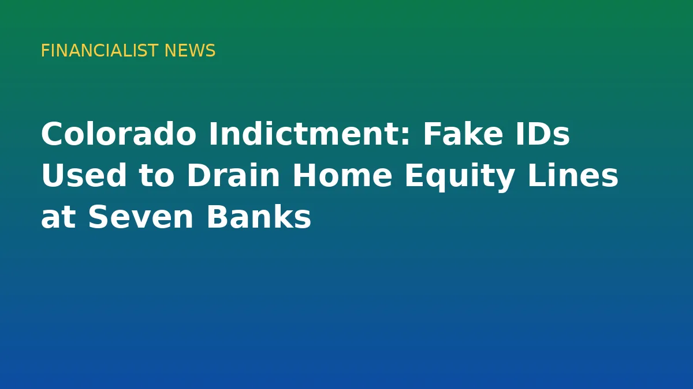
Colorado Indictment: Fake IDs Used to Drain Home Equity Lines at Seven Banks
Prosecutors allege more than $800,000 in losses. Both defendants are presumed innocent until proven guilty.
By Kseniya Dzigava · October 8, 2026 at 11:23 AM UTC-04:00
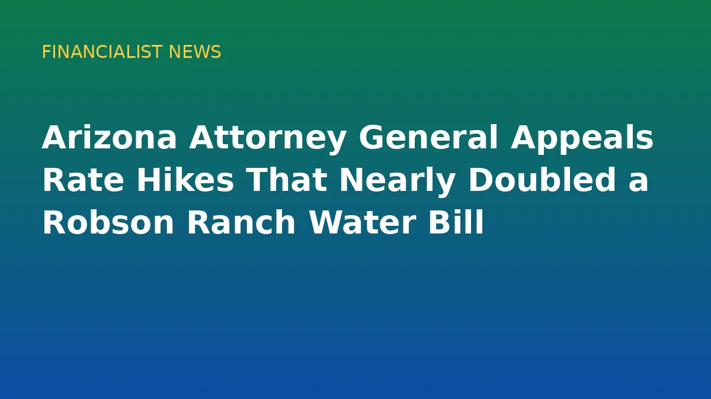
Arizona Attorney General Appeals Rate Hikes That Nearly Doubled a Robson Ranch Water Bill
The average combined water and sewer bill went from $72.01 to $143.59 after a March approval. The state asks the court to send it back.
By Kseniya Dzigava · October 8, 2026 at 11:23 AM UTC-04:00
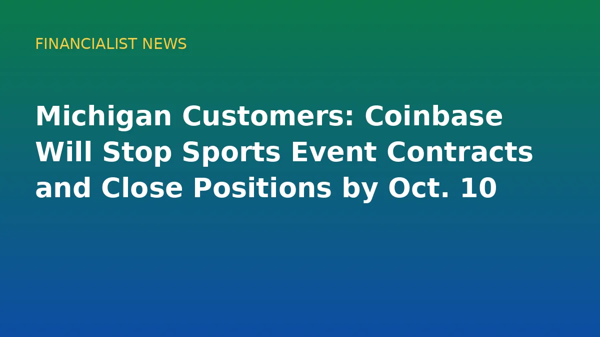
Michigan Customers: Coinbase Will Stop Sports Event Contracts and Close Positions by Oct. 10
The state gaming board says the deal follows similar agreements with Robinhood and Kalshi. Coinbase's appeal continues.
By Kseniya Dzigava · October 8, 2026 at 11:24 AM UTC-04:00
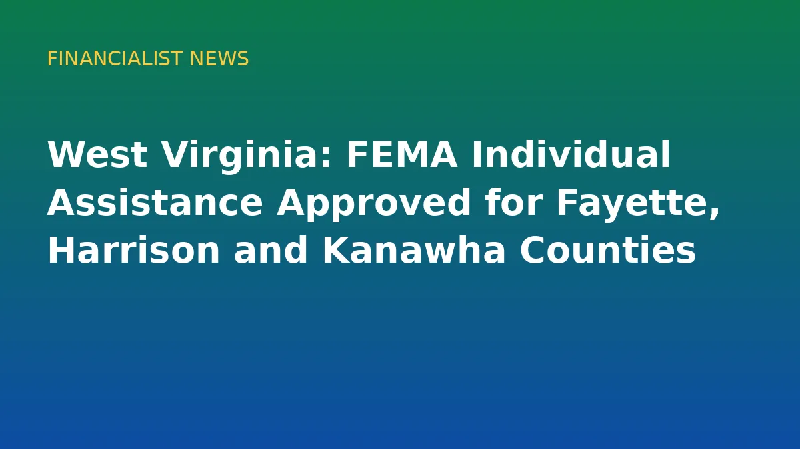
West Virginia: FEMA Individual Assistance Approved for Fayette, Harrison and Kanawha Counties
Residents hit by the Aug. 14-18 storms can apply online or by phone. FEMA kept its denial for Boone and Logan counties.
By Kseniya Dzigava · October 8, 2026 at 11:21 AM UTC-04:00
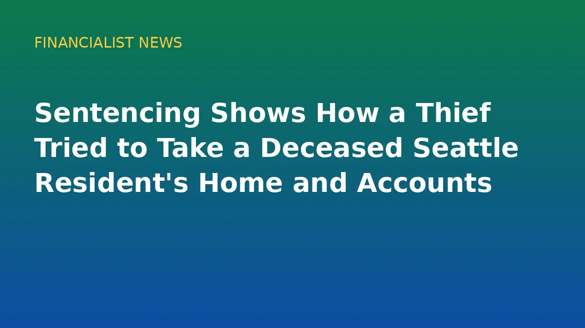
Sentencing Shows How a Thief Tried to Take a Deceased Seattle Resident's Home and Accounts
A forged power of attorney, bank logins and brokerage takeovers were stopped by a niece and fraud restrictions.
By Kseniya Dzigava · October 8, 2026 at 11:21 AM UTC-04:00
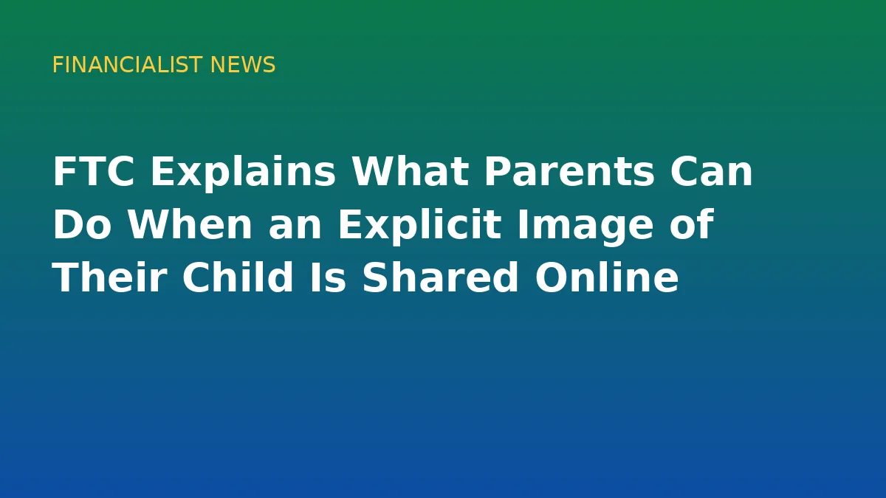
FTC Explains What Parents Can Do When an Explicit Image of Their Child Is Shared Online
The consumer alert covers reporting to police and NCMEC, platform takedown requests under the Take It Down Act, and the 48-hour window.
By Kseniya Dzigava · October 8, 2026 at 11:21 AM UTC-04:00
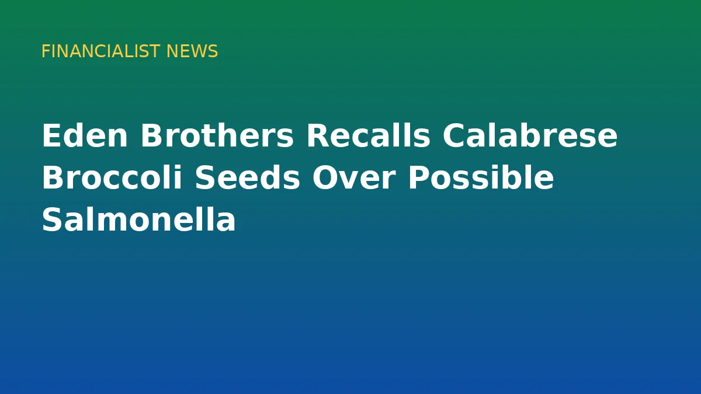
Eden Brothers Recalls Calabrese Broccoli Seeds Over Possible Salmonella
Two lots sold online and on Amazon from July 8 to Sept. 28 are covered. The company offers full refunds.
By Kseniya Dzigava · October 8, 2026 at 11:19 AM UTC-04:00
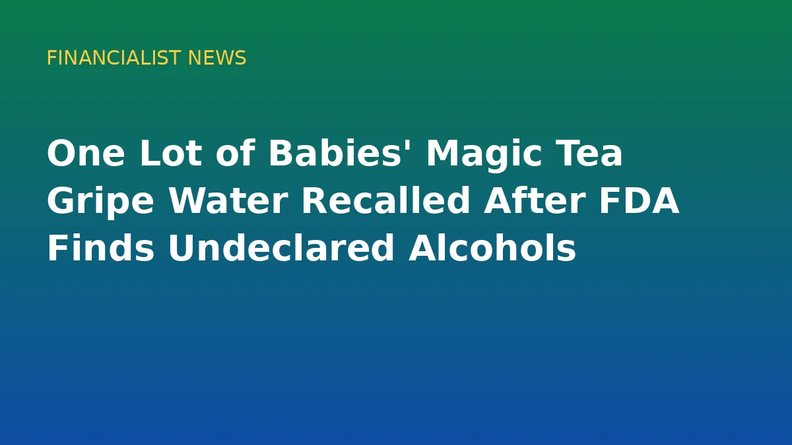
One Lot of Babies' Magic Tea Gripe Water Recalled After FDA Finds Undeclared Alcohols
FDA testing found ethanol, methanol and isopropanol that were not on the label. Lot 25122bw is covered.
By Kseniya Dzigava · October 8, 2026 at 11:19 AM UTC-04:00
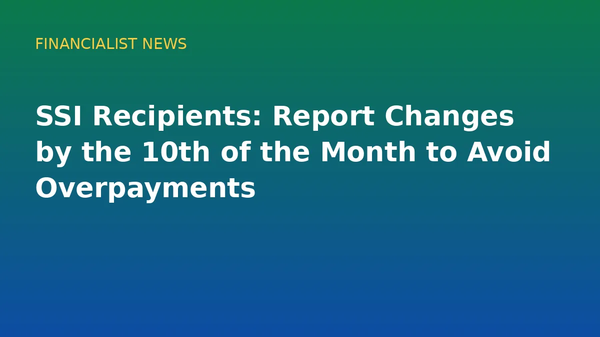
SSI Recipients: Report Changes by the 10th of the Month to Avoid Overpayments
Social Security's Oct. 7 notice lists what must be reported and the five ways to report wages.
By Kseniya Dzigava · October 8, 2026 at 11:19 AM UTC-04:00
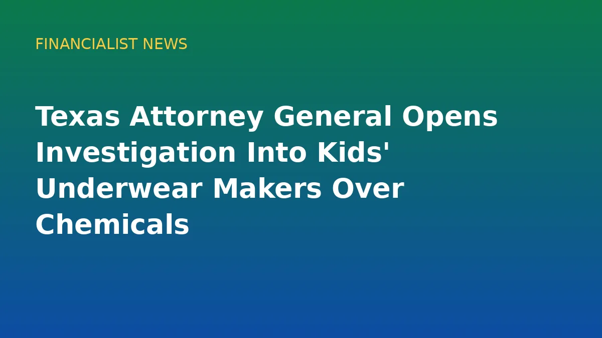
Texas Attorney General Opens Investigation Into Kids' Underwear Makers Over Chemicals
Civil investigative demands went to Hanes and Fruit of the Loom. The release does not report any finding of harm.
By Kseniya Dzigava · October 8, 2026 at 11:19 AM UTC-04:00
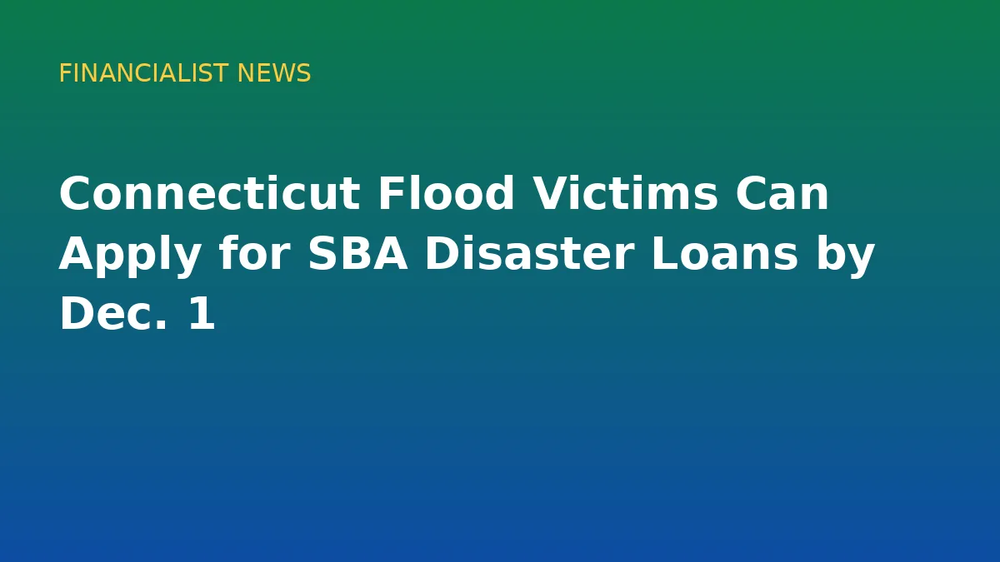
Connecticut Flood Victims Can Apply for SBA Disaster Loans by Dec. 1
Fairfield, New Haven and Litchfield counties are covered. Economic injury loan applications stay open until July 2, 2027.
By Kseniya Dzigava · October 8, 2026 at 11:17 AM UTC-04:00
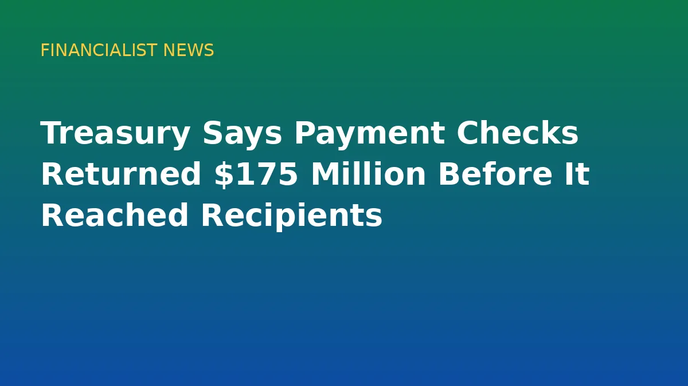
Treasury Says Payment Checks Returned $175 Million Before It Reached Recipients
Treasury reports it screened 1.1 billion federal payments worth about $3.7 trillion in fiscal 2026.
By Kseniya Dzigava · October 8, 2026 at 11:17 AM UTC-04:00
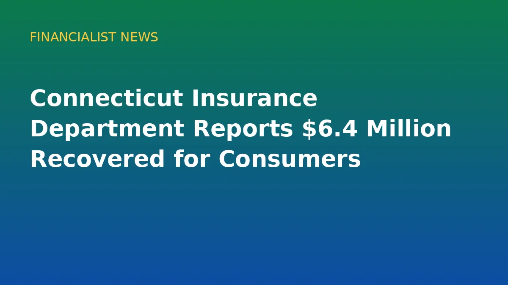
Connecticut Insurance Department Reports $6.4 Million Recovered for Consumers
The department also says its life insurance locator matched more than $35 million in coverage.
By Kseniya Dzigava · October 8, 2026 at 11:17 AM UTC-04:00
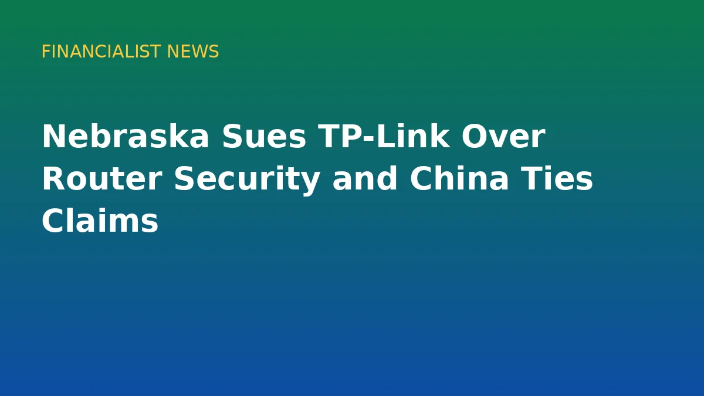
Nebraska Sues TP-Link Over Router Security and China Ties Claims
The attorney general alleges deceptive marketing under state consumer law and seeks civil penalties. The company's response was not in the release.
By Kseniya Dzigava · October 8, 2026 at 11:17 AM UTC-04:00
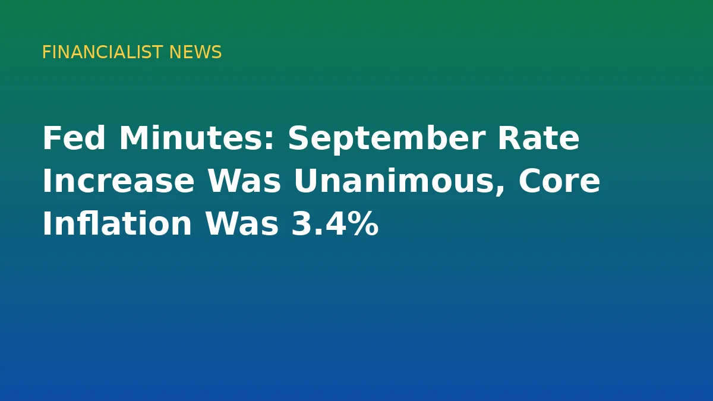
Fed Minutes: September Rate Increase Was Unanimous, Core Inflation Was 3.4%
Minutes released Oct. 7 show the Fed raised its target range to 3.75% to 4% and moved the primary credit rate to 4%.
By Kseniya Dzigava · October 8, 2026 at 11:14 AM UTC-04:00
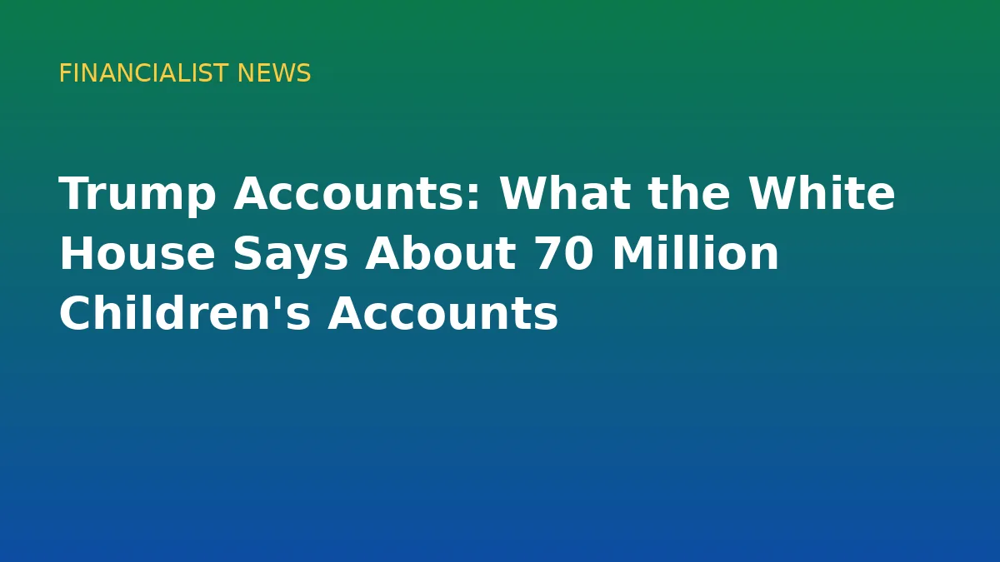
Trump Accounts: What the White House Says About 70 Million Children's Accounts
The administration says parents must claim an account to manage it and receive the $1,000 seed deposit for eligible children.
By Kseniya Dzigava · October 8, 2026 at 11:14 AM UTC-04:00
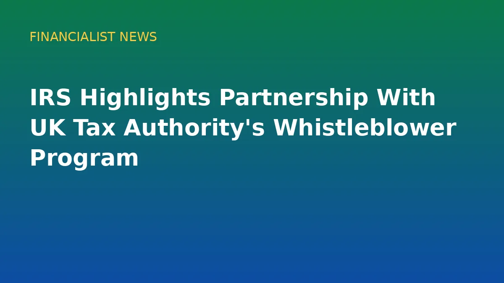
IRS Highlights Partnership With UK Tax Authority's Whistleblower Program
The IRS says its whistleblower office helped HMRC set up a rewards scheme aimed at serious tax evasion by the wealthiest.
By Kseniya Dzigava · October 8, 2026 at 11:14 AM UTC-04:00
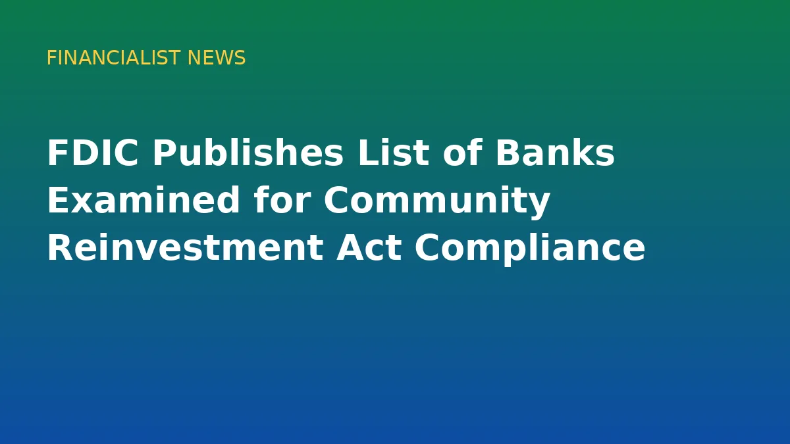
FDIC Publishes List of Banks Examined for Community Reinvestment Act Compliance
The Oct. 5 list covers ratings the FDIC assigned in July 2026 to state nonmember banks.
By Kseniya Dzigava · October 8, 2026 at 11:14 AM UTC-04:00
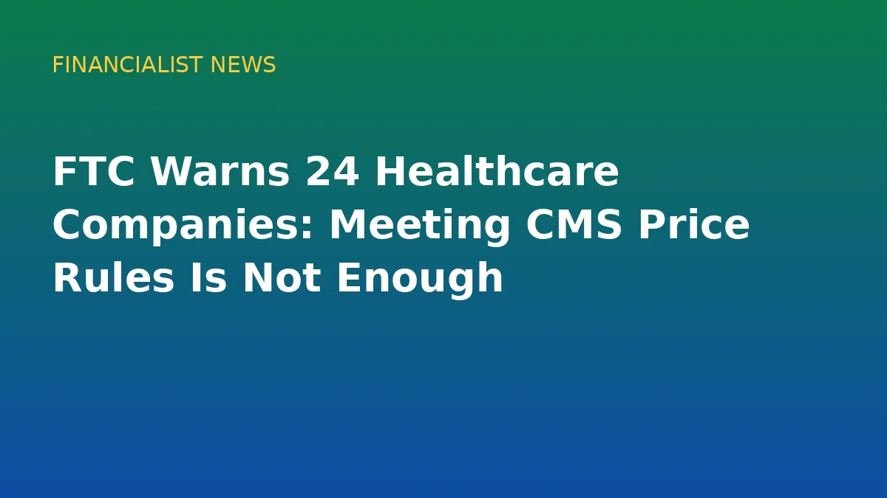
FTC Warns 24 Healthcare Companies: Meeting CMS Price Rules Is Not Enough
Letters say incomplete or inaccurate prices can be deceptive, including when physician or facility fees are left out.
By Kseniya Dzigava · October 8, 2026 at 11:12 AM UTC-04:00
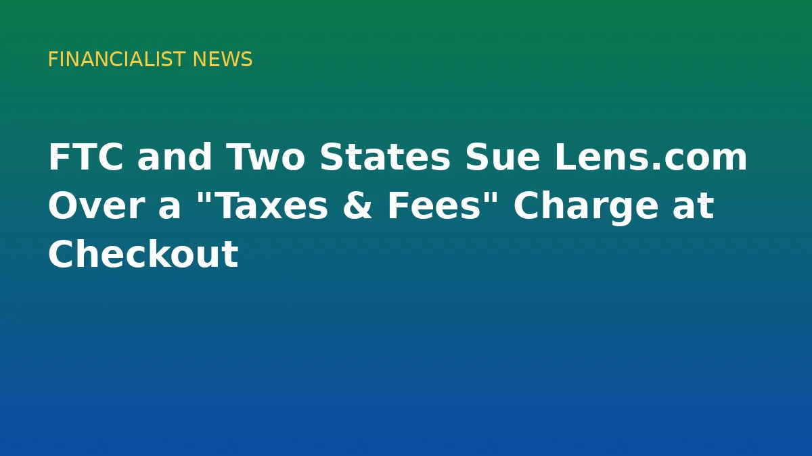
FTC and Two States Sue Lens.com Over a "Taxes & Fees" Charge at Checkout
The complaint says the charge often doubles the advertised price of contact lenses. The case will be decided by a court.
By Kseniya Dzigava · October 8, 2026 at 11:12 AM UTC-04:00
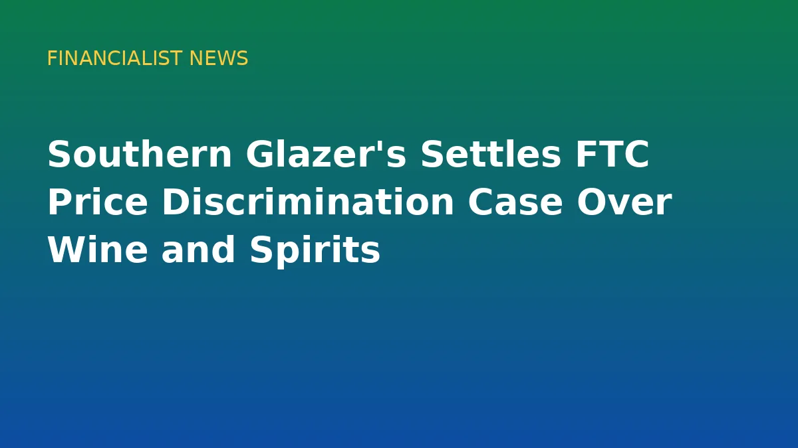
Southern Glazer's Settles FTC Price Discrimination Case Over Wine and Spirits
The order covers sales to five large chains in 26 states and lasts six years under an independent monitor.
By Kseniya Dzigava · October 8, 2026 at 11:12 AM UTC-04:00
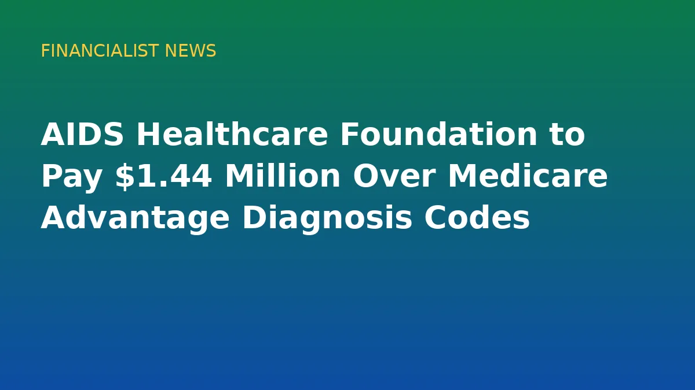
AIDS Healthcare Foundation to Pay $1.44 Million Over Medicare Advantage Diagnosis Codes
The Justice Department says the group failed to delete unsupported diagnosis codes that raised payments.
By Kseniya Dzigava · October 8, 2026 at 11:12 AM UTC-04:00
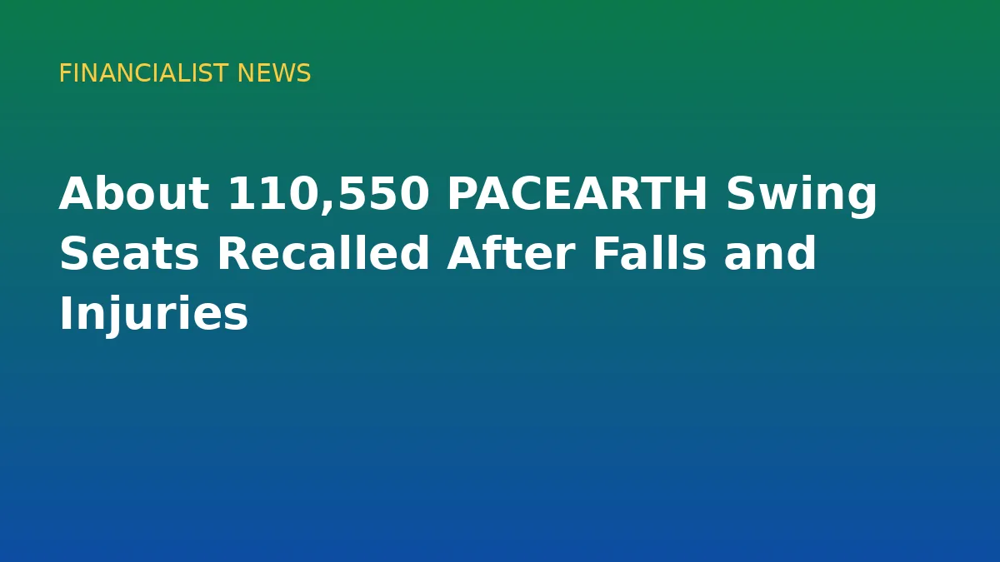
About 110,550 PACEARTH Swing Seats Recalled After Falls and Injuries
Buyers on Amazon since 2017 can get a full refund after photographing the marked seat.
By Kseniya Dzigava · October 8, 2026 at 11:12 AM UTC-04:00
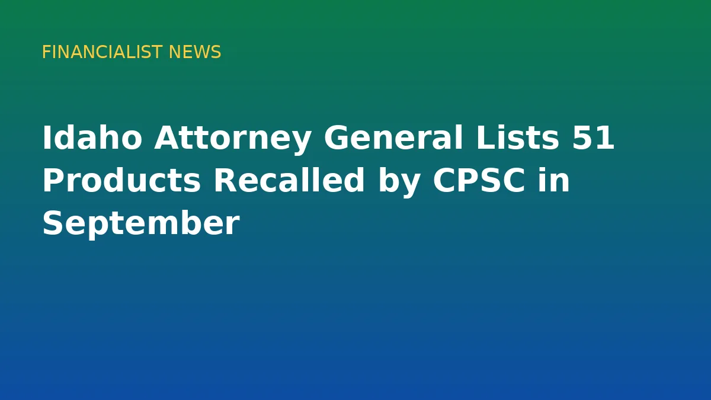
Idaho Attorney General Lists 51 Products Recalled by CPSC in September
The list includes mattresses that fail flammability rules and 17 items for infants and children.
By Kseniya Dzigava · October 8, 2026 at 11:12 AM UTC-04:00
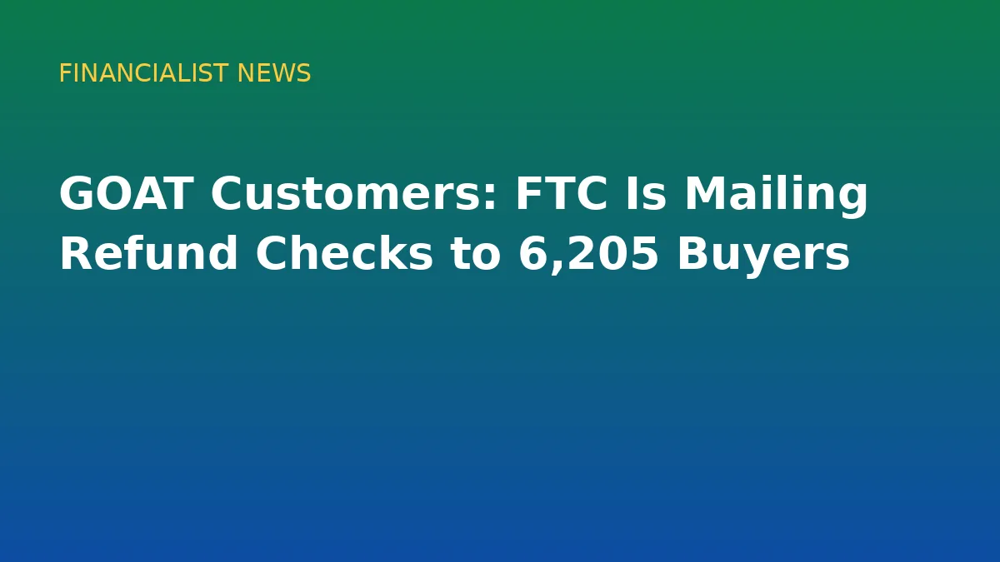
GOAT Customers: FTC Is Mailing Refund Checks to 6,205 Buyers
The FTC says it is sending more than $100,000 to shoppers who were denied promised refunds. Checks must be cashed within 90 days.
By Kseniya Dzigava · October 8, 2026 at 11:06 AM UTC-04:00
Premier Martial Arts Franchisees May Get a Penalty-Free Exit Under FTC Settlement
Proposed orders require $1.85 million in payments and let certain franchisees cancel without penalty.
By Kseniya Dzigava · October 8, 2026 at 11:07 AM UTC-04:00
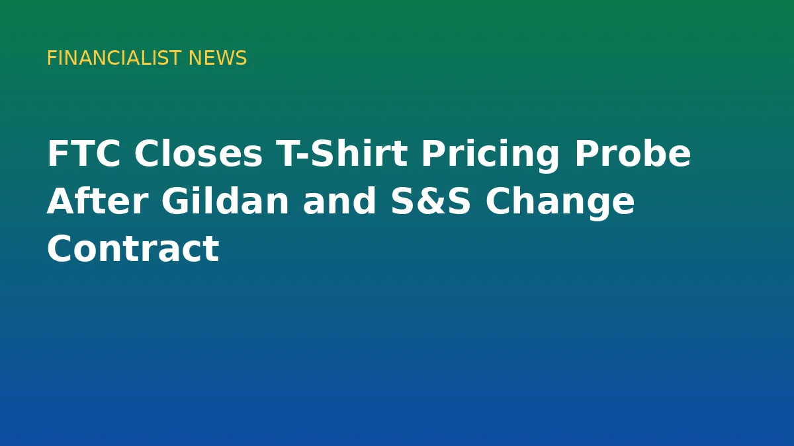
FTC Closes T-Shirt Pricing Probe After Gildan and S&S Change Contract
The agency says the amended agreement no longer limits Gildan's pricing to other wholesale distributors.
By Kseniya Dzigava · October 8, 2026 at 11:07 AM UTC-04:00
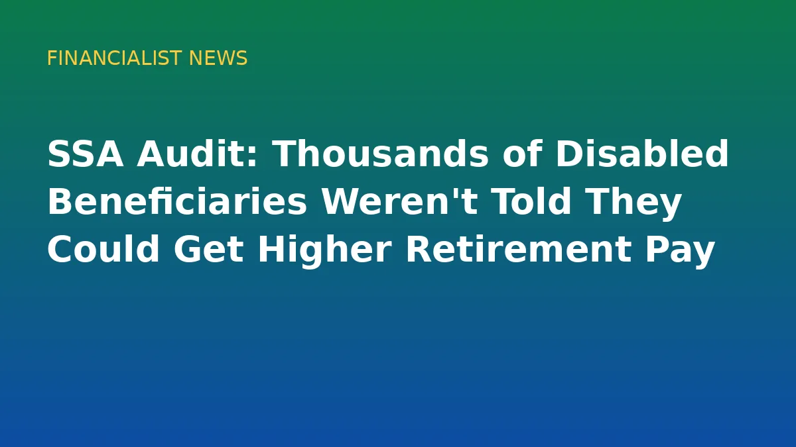
SSA Audit: Thousands of Disabled Beneficiaries Weren't Told They Could Get Higher Retirement Pay
The inspector general estimates about $84 million in benefits was at stake for people whose disability pay is reduced by other benefits.
By Kseniya Dzigava · October 8, 2026 at 11:07 AM UTC-04:00
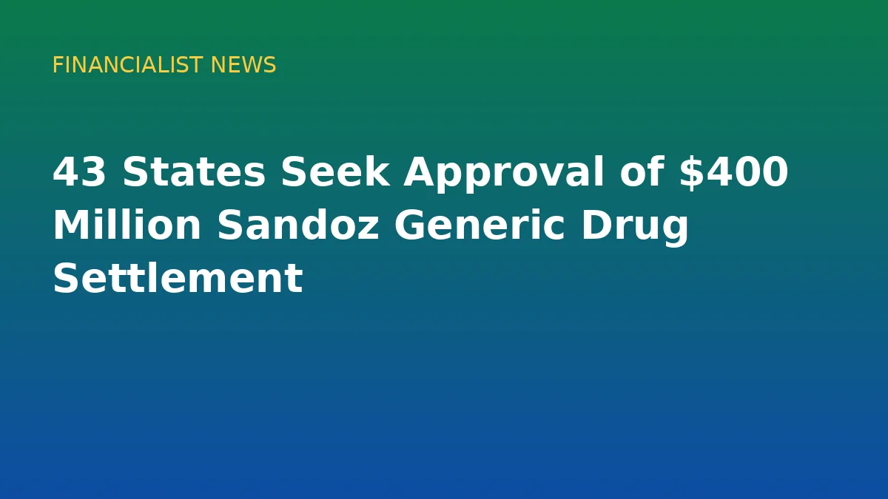
43 States Seek Approval of $400 Million Sandoz Generic Drug Settlement
Buyers of generic prescriptions between May 2009 and December 2019 may be eligible for compensation.
By Kseniya Dzigava · October 8, 2026 at 11:07 AM UTC-04:00
IRS Tip: Payment Plans, Offers in Compromise and Wage Levy Limits Under Taxpayer Rights
An Oct. 7 IRS tax tip lists what the right to a fair and just tax system means for people who owe.
By Kseniya Dzigava · October 8, 2026 at 11:07 AM UTC-04:00
SEC and Regulators Warn Investors About Relationship and Impersonation Scams
A joint bulletin for World Investor Week urges caution about rising investment fraud.
By Kseniya Dzigava · October 8, 2026 at 11:07 AM UTC-04:00
HUD Opens Fair Housing Investigation Into Wells Fargo Homeownership Programs
HUD says it sent the bank's CEO a letter examining its efforts to increase Black homeownership.
By Kseniya Dzigava · October 8, 2026 at 11:07 AM UTC-04:00
ModMed Settlement Has a Cash Fallback for Rejected Loss Claims
The estimated $75 alternative replaces documented reimbursement, not adds to it.
By Kseniya Dzigava · October 7, 2026 at 12:23 AM EDT
Summit Medical Allows Loss and Time Claims, but Cash Shares Can Shrink
The $500,000 aggregate cash limit matters more than a headline maximum.
By Kseniya Dzigava · October 7, 2026 at 12:23 AM EDT
San Francisco Domino’s Fee Settlement Offers Less Cash Than Voucher Value
The percentages apply to the six-percent surcharge, not the whole pizza bill.
By Kseniya Dzigava · October 7, 2026 at 12:23 AM EDT
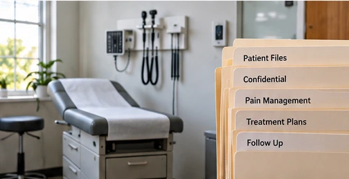
Twin Cities Pain Clinic’s Expected $55 Payment Has a $385,000 Cash Cap
Ordinary expenses and extraordinary losses have different individual ceilings.
By Kseniya Dzigava · October 7, 2026 at 12:23 AM EDT
Boone Health Portal Settlement Has an October 9 Exit Deadline Before Cash Claims
The $20 claim window runs to November 9 for eligible Missouri patients.
By Kseniya Dzigava · October 7, 2026 at 12:23 AM EDT
Peco Foods’ Up-to-$550 Cash Share Comes From What Is Left
The October 12 rights deadline precedes November 9 benefit claims.
By Kseniya Dzigava · October 7, 2026 at 12:23 AM EDT
Russelectric ESOP Settlement: Doing Nothing Means a Check, Not a Rollover
Four proposed settlements create a combined $14.55 million fund.
By Kseniya Dzigava · October 7, 2026 at 12:23 AM EDT
MyMichigan 403(b) Settlement Has a Rollover Choice for Former Participants
GoalMaker use or Guaranteed Income Fund investment limits the class.
By Kseniya Dzigava · October 7, 2026 at 12:23 AM EDT
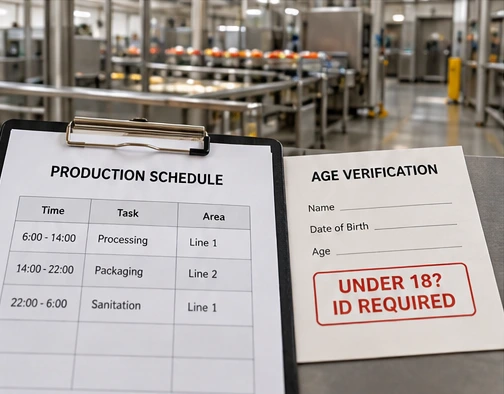
Hearthside Child-Labor Claims Are Open Regardless of Immigration Status
Illinois reminds qualifying former young workers about the November 20 deadline.
By Kseniya Dzigava · October 7, 2026 at 12:23 AM EDT
IOD Medical-Record Refund Claims Must Arrive by November 30, Not Just Be Mailed
The 35-percent benefit applies to specified Pennsylvania copying charges.
By Kseniya Dzigava · October 7, 2026 at 12:23 AM EDT
Cosco Fire Protection Applicants Have an October 23 Payment-Details Deadline
Washington job applicants may be included even if they were never hired.
By Kseniya Dzigava · October 7, 2026 at 12:20 AM EDT
FN Logistics Wage Settlement: A Wrong Workweek Count Can Reduce Your Share
Staffing-agency warehouse workers are included in the California notice definition.
By Kseniya Dzigava · October 7, 2026 at 12:20 AM EDT
Gosiger Applicants Can Choose Digital Payment Before October 26
The estimated $1,841.27 share remains subject to final approval.
By Kseniya Dzigava · October 7, 2026 at 12:20 AM EDT
Alba Worker Restitution Claims Are Extended to October 31
Reported injuries and workplace harassment have different eligibility periods.
By Kseniya Dzigava · October 7, 2026 at 12:20 AM EDT
These Denny’s Workers Can Claim Missing Long-Workday Pay by October 31
The $440,000 fund covers a Western New York franchise operator, not the whole chain.
By Kseniya Dzigava · October 7, 2026 at 12:20 AM EDT
LiveHealth Online Settlement Covers the Booking Tool, Not Every Telehealth Visit
The $51.14 to $102.29 estimate depends on the number of valid claims.
By Kseniya Dzigava · October 7, 2026 at 12:20 AM EDT
Fairchild Pixel Settlement Has a $25 Claim Window After the Rights Deadline
California citizenship and affected information define this small class.
By Kseniya Dzigava · October 7, 2026 at 12:20 AM EDT
Furniture Mart Breach Settlement: The $75 Option Replaces Loss and Time Claims
The November 3 cash deadline is later than the already-passed exclusion deadline.
By Kseniya Dzigava · October 7, 2026 at 12:20 AM EDT
Schnucks Rewards Settlement Pairs a $7 Claim With a Future Tax-System Change
Missouri purchases paid partly with reward points define eligibility.
By Kseniya Dzigava · October 7, 2026 at 12:20 AM EDT
YES Communities Cash Claim: $50 Is an Alternative, Not an Add-On
Documented losses and response time can pair; the flat-cash choice replaces both.
By Kseniya Dzigava · October 7, 2026 at 12:20 AM EDT
FinWise Breach Cash Could Shrink to Zero After Loss Claims
October 29 filing covers cash choices and two years of monitoring.
By Kseniya Dzigava · October 7, 2026 at 12:16 AM EDT
DAP Health Cash Choices Can Stack, but the $25 Share Is an Estimate
California residence on July 22, 2024 controls a separate $75 statutory payment.
By Kseniya Dzigava · October 7, 2026 at 12:16 AM EDT
Muscatine Utility Breach Has an October 9 Rights Deadline and October 26 Cash Claims
Time spent can be claimed by attestation, while money losses need records.
By Kseniya Dzigava · October 7, 2026 at 12:16 AM EDT
AMN Interpretation Claims Need Registration Before the Online Cash Form
The $10,000 ceiling is not a standard award for each interpreted conversation.
By Kseniya Dzigava · October 7, 2026 at 12:16 AM EDT
Colorado Warns Landlords: Abuse-Related Missed Rent Can Require a Fee-Free Plan
The October 6 advisory explains existing protections, not a new rent-forgiveness program.
By Kseniya Dzigava · October 7, 2026 at 12:16 AM EDT
NYC Wants to Let Consumers Sue Over Unfair Practices. The POWER Act Is Still a Proposal
The city announcement includes tenants, taxi financing and for-profit-school debt.
By Kseniya Dzigava · October 7, 2026 at 12:16 AM EDT
A Collector Moved the Judgment, but the Court Said the Clock Did Not Restart
The Washington ruling decides liability, not every old debt or the final damages.
By Kseniya Dzigava · October 7, 2026 at 12:16 AM EDT
Debt-Relief Voicemail Case Survives Dismissal. Calling Back Was Not Retroactive Consent
The October 2 Tennessee opinion leaves allegations to be tested, not a cash settlement.
By Kseniya Dzigava · October 7, 2026 at 12:16 AM EDT
A Free Apartment Did Not End the Wage Claim. Supreme Court Declines Review
The October 5 docket leaves the New Jersey ruling in place without a new merits opinion.
By Kseniya Dzigava · October 7, 2026 at 12:16 AM EDT
Mercurys Coffee Applicant Payments Are Automatic. October 21 Is a Rights Deadline
The $73.31 notice estimate is not a refund for coffee purchases.
By Kseniya Dzigava · October 7, 2026 at 12:16 AM EDT
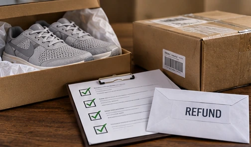
GOAT Refunds Are Going to 6,205 Customers. A Store Credit Is Not the Same as Cash
The FTC gives checks and digital payments different redemption clocks.
By Kseniya Dzigava · October 7, 2026 at 12:13 AM EDT
Dallas Opens Up to $24,000 for Home Repairs, but It Is a Forgivable Loan
The October 16 window requires current mortgage and property taxes, not just repair needs.
By Kseniya Dzigava · October 7, 2026 at 12:13 AM EDT
Texas Opens $31 Million in Veteran Aid Grants. Veterans Are Not the Applicants
The new funding round is for nonprofits and local-government service providers.
By Kseniya Dzigava · October 7, 2026 at 12:13 AM EDT
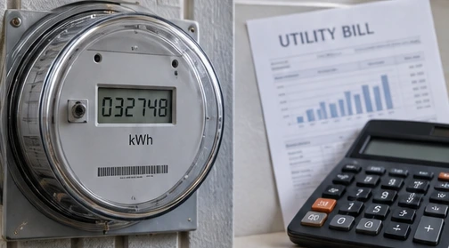
Michigan Challenges a 9.8% Electric-Rate Request. It Is Not a Bill Cut Yet
The attorney general seeks a 53% reduction in the requested increase, not in current bills.
By Kseniya Dzigava · October 7, 2026 at 12:13 AM EDT
New Oregon Disaster Declaration Opens Economic-Injury Loans, Not Loss Grants
The October 6 notice gives a July 1, 2027 deadline and different interest rates by borrower type.
By Kseniya Dzigava · October 7, 2026 at 12:13 AM EDT
SpecialtyCare Workers Could Lose Training Debt and Receive Cash. No Claim Form Is Required
November 2 covers legal choices, while relief still needs final court approval.
By Kseniya Dzigava · October 7, 2026 at 12:13 AM EDT
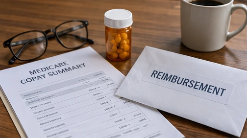
NYC Senior Care Notices Do Not All Include a Reimbursement Claim
October 30 claims, October 15 exclusions and November 30 objections are different deadlines.
By Kseniya Dzigava · October 7, 2026 at 12:13 AM EDT
Guadalupe Collection Settlement Offers $1,000 Plus Prior Collections, Automatically
The case concerns Santa Fe magistrate lawsuits filed without licensed counsel.
By Kseniya Dzigava · October 7, 2026 at 12:13 AM EDT
ACCT's $8.75 Million Deal Is Mostly Debt Reduction, Not Cash Checks
The October 29 objection deadline is separate from former participants' rollover election.
By Kseniya Dzigava · October 7, 2026 at 12:13 AM EDT
SELA Tenants Must Claim Deposit Cash. Debt Relief Has a Different Cutoff
November 22 claims concern specified Florida deposits and missing notice allegations.
By Kseniya Dzigava · October 7, 2026 at 12:13 AM EDT
EFS and Aviben Rights Deadline Is October 7, With Cash Claims Open October 22
The $850,000 aggregate cap includes fees and monitoring as well as cash.
By Kseniya Dzigava · October 6, 2026 at 7:19 AM EDT
Palomar Health Rights Deadline Is October 7. Cash Claims Close October 22
The proposed $3.1 million fund offers two cash choices, not a combined $5,060 award.
By Kseniya Dzigava · October 6, 2026 at 7:17 AM EDT
Vintage Wine Investor Claims Close October 9. The $0.79 Average Is Before Deductions
The $7.5 million proposal concerns specified share purchases, not wine purchases.
By Kseniya Dzigava · October 6, 2026 at 7:17 AM EDT
Saint-Gobain Applicant Settlement Has an October 8 Rights and Address Deadline
Automatic payment still requires a valid address; the online class definition ends July 26, 2025.
By Kseniya Dzigava · October 6, 2026 at 7:17 AM EDT
Hydromax Applicant Claims Close October 12. Payment Is Not Automatic
The maximum $382,500 fund depends on participating claims.
By Kseniya Dzigava · October 6, 2026 at 7:17 AM EDT
Scribd Applicant Settlement Is Automatic. October 12 Covers Rights and Details
The $219.27 estimate comes from the notice, not a guaranteed award for every applicant.
By Kseniya Dzigava · October 6, 2026 at 7:17 AM EDT
Talkdesk Applicant Claims Close October 13. The $5,000 Figure Is a Cap
Class participation affects the proposed fund size and actual net share.
By Kseniya Dzigava · October 6, 2026 at 7:17 AM EDT
MCNA Dental Cash Claims Close October 19. Monitoring Does Not Need a Form
A shared $250,000 loss-payment limit is separate from the per-person $2,500 cap.
By Kseniya Dzigava · October 6, 2026 at 7:17 AM EDT
Seagate Investor Claims Close October 19, Before the Rights Deadline
The $175 million proposal does not guarantee $1.03 per share.
By Kseniya Dzigava · October 6, 2026 at 7:17 AM EDT
Tennessee Farmers Has an October 19 Payment-Method Deadline, Not a New Claim Window
The total-loss settlement concerns a specific valuation adjustment.
By Kseniya Dzigava · October 6, 2026 at 7:17 AM EDT
Le Moyne College Payments Are Automatic. October 19 Covers Elections and Rights
Spring 2020 on-campus enrollment and charged tuition or fees define eligibility.
By Kseniya Dzigava · October 6, 2026 at 7:17 AM EDT
FCA Valve-Train Claims Close October 12. The Warranty Benefit Does Not Need a Cash Claim
Specified 3.6-liter vehicles and state histories matter more than the model name alone.
By Kseniya Dzigava · October 6, 2026 at 7:13 AM EDT
Thermoflex Privacy Settlement Offers Automatic Checks, With an October 26 Rights Deadline
The notice separates a gross allocation from estimated net cash after deductions.
By Kseniya Dzigava · October 6, 2026 at 7:13 AM EDT
Crossroads Breach Claims Have a California Cash Add-On, With October 13 Filing
The residency period and alternative-payment rule are separate conditions.
By Kseniya Dzigava · October 6, 2026 at 7:13 AM EDT
Dairy Farmers Data Claims Close October 14. A Shared Cash Cap Can Reduce Awards
The estimated $55 option replaces loss reimbursement, rather than adding to it.
By Kseniya Dzigava · October 6, 2026 at 7:13 AM EDT
Sansone Breach Claims Offer $45 Instead of Documented Loss Cash
The October 13 deadline concerns the March 2025 property-company incident.
By Kseniya Dzigava · October 6, 2026 at 7:13 AM EDT
Docketwise Breach Claims Share a $5,000 Loss-and-Time Cap
The alternative $50 route excludes those reimbursement claims.
By Kseniya Dzigava · October 6, 2026 at 7:13 AM EDT
Community Dental Claims Offer $50 or Proven Losses by October 19
The December 2024 incident is separate from the Community Connections settlement.
By Kseniya Dzigava · October 6, 2026 at 7:13 AM EDT
WPM Pathology Claims Have Several Cash Routes, but $45 Replaces the Others
The October 19 deadline also covers exclusion and objections.
By Kseniya Dzigava · October 6, 2026 at 7:13 AM EDT
Americold Claims Stay Open to October 22, After the Scheduled October 6 Hearing
Affected-person notices define the class, and notice of two incidents affects residual cash.
By Kseniya Dzigava · October 6, 2026 at 7:13 AM EDT
Highlands Oncology Has an October 7 Rights Deadline, With Cash Claims Open Longer
Claims remain open October 22 for loss cash or the $50 alternative.
By Kseniya Dzigava · October 6, 2026 at 7:13 AM EDT
AmTrust Securities Claims Close October 7. Ordinary Stock Ownership Is Not Enough
The partial settlement concerns shares traceable to two offerings.
By Kseniya Dzigava · October 6, 2026 at 7:10 AM EDT
Stitch Fix Investor Claims Close October 7. Clothing Purchases Do Not Qualify
The $32 million case covers specified common-stock transactions and claimed losses.
By Kseniya Dzigava · October 6, 2026 at 7:10 AM EDT
TAL Investor Claims Have an October 8 Online Deadline. Mailing Closed Earlier
The court notice separates electronic claims from a September 29 postmark cutoff.
By Kseniya Dzigava · October 6, 2026 at 7:10 AM EDT
ARCC Data Claims Close October 8. The Time Benefit Is Capped at $80
The computing-consortium case concerns people sent notice of the February 2023 incident.
By Kseniya Dzigava · October 6, 2026 at 7:10 AM EDT
HireVue Privacy Claims Close October 13. Not Every Video Interview Qualifies
The administrator says the disputed models were retired before the class period ended.
By Kseniya Dzigava · October 6, 2026 at 7:10 AM EDT
Livingston Derailment Claims Need Residency or Ownership Proof by October 19
Prior CSX payments can reduce the proposed household benefit.
By Kseniya Dzigava · October 6, 2026 at 7:10 AM EDT
Tift and Southwell Data Claims Offer Loss Cash or an Estimated $75
The October 15 cutoff applies to claims, with separate medical-monitoring benefits.
By Kseniya Dzigava · October 6, 2026 at 7:10 AM EDT
Concora Call Claims Close October 19. The Class Excludes Account-Holder Numbers
The settlement concerns artificial or prerecorded calls, not every unwanted collection call.
By Kseniya Dzigava · October 6, 2026 at 7:10 AM EDT
Urban One Breach Claims Close October 12. Check the Affected Notice
The broadcaster case has its own class and benefit rules, separate from other media privacy settlements.
By Kseniya Dzigava · October 6, 2026 at 7:10 AM EDT
Tennessee Metropolis Parking Claims Close October 9. A Full Prior Refund Excludes the Charge
The approved restitution deal covers specified wrongfully charged parking sessions.
By Kseniya Dzigava · October 6, 2026 at 7:10 AM EDT
Stockpile Breach Claims Close October 6. $90 Is the Cap, Not a Guaranteed Check
The same date covers cash claims, exclusion and objections.
By Kseniya Dzigava · October 6, 2026 at 7:07 AM EDT
Community Connections Cash Claims Close October 6. Monitoring Has a Separate Route
The settlement concerns two data incidents, not every behavioral-health patient.
By Kseniya Dzigava · October 6, 2026 at 7:07 AM EDT
Providence 401(k) Settlement Includes Future Plan Expenses, Not $42.7 Million in Checks
October 6 is an objection deadline; eligible members do not need a claim form.
By Kseniya Dzigava · October 6, 2026 at 7:07 AM EDT
Bradford-Scott Breach Claims Close October 7. $100 Cash Is an Estimate
Affected Sharetec-related records, not a credit-union membership alone, determine eligibility.
By Kseniya Dzigava · October 6, 2026 at 7:07 AM EDT
FTC Warns 24 Health Companies About Missing Prices and Hidden Fees
Compliance with CMS price rules is not a safe harbor under the FTC Act.
By Kseniya Dzigava · October 6, 2026 at 7:07 AM EDT
New York Opens 2027-28 College Aid Applications. TAP and STEM Have Different Terms
The October 5 announcement separates grant eligibility, deadlines and a five-year STEM obligation.
By Kseniya Dzigava · October 6, 2026 at 7:07 AM EDT
Colorado EV Home Charge Grants Open for Utilities, Not Direct Household Applications
The October 5-30 round supports wiring and panel rebates through eligible electric providers.
By Kseniya Dzigava · October 6, 2026 at 7:07 AM EDT
Oklahoma Reopens Drought-Assistance Applications Through October 30
The Conservation Commission confirms the reopened window; project terms require the current materials.
By Kseniya Dzigava · October 6, 2026 at 7:07 AM EDT
OnePoint Patient Care Claims Close October 8. Cash Routes Are Alternatives
The pharmacy data settlement separates documented losses from an estimated $100 payment.
By Kseniya Dzigava · October 6, 2026 at 7:07 AM EDT
Costa Warranty Settlement Has an October 8 Rights Deadline, Not a Cash Claim Cutoff
Eligible warranty repairs receive automatic proportional payments if the court approves.
By Kseniya Dzigava · October 5, 2026 at 7:22 AM EDT

Mullinax Data Settlement Offers Loss-and-Time Cash or a $50 Alternative
The November 23 deadline concerns the specific affected dealership class, not every vehicle buyer.
By Kseniya Dzigava · October 5, 2026 at 7:22 AM EDT
BuyAlerts Text Settlement Offers Up to $42.16, With Three Class Definitions
The new settlement website identifies stop-request and Do Not Call classes, with claims due February 16.
By Kseniya Dzigava · October 5, 2026 at 7:22 AM EDT
Turkey Antitrust Settlements Require a New Claim by October 30
The direct-purchaser notice does not cover shoppers who bought turkey from a supermarket.
By Kseniya Dzigava · October 5, 2026 at 7:22 AM EDT
Adding Family to FEHB or PSHB in 2027 Needs Eligibility Documents
The new Open Season requirement applies when adding a family member, not a blanket instruction to remove current dependents.
By Kseniya Dzigava · October 5, 2026 at 7:19 AM EDT
Some Federal Health Plans End in 2027. Doing Nothing Can Change Your Plan
OPM identifies different default plans for affected FEHB and postal enrollees.
By Kseniya Dzigava · October 5, 2026 at 7:19 AM EDT
Federal Plans Add a Therapy Requirement for Anti-Obesity Drugs in 2027
Documented intensive behavioral therapy is required before and during medication treatment.
By Kseniya Dzigava · October 5, 2026 at 7:19 AM EDT
Catalina Wage-Theft Case Delivers $1.5 Million to Court for Worker Restitution
A check delivered at sentencing is not the same thing as completed payments to every worker.
By Kseniya Dzigava · October 5, 2026 at 7:19 AM EDT
IRS Warns That Marketed Tribal Tax Credits Do Not Exist
A previously accepted tax return is not proof the advertised credit is lawful.
By Kseniya Dzigava · October 5, 2026 at 7:19 AM EDT
CMS Cancels Unauthorized Marketplace Enrollments and Restricts New Broker Registration
The agency distinguishes enrollment records, covered people and projected subsidy savings.
By Kseniya Dzigava · October 5, 2026 at 7:19 AM EDT
Postal Health Portal Plans a Separate Life-Event Workflow for Open Season
OPM says the redesigned portal is scheduled to launch during the upcoming enrollment period.
By Kseniya Dzigava · October 5, 2026 at 7:19 AM EDT
FEDVIP Tool Compares Estimated Costs for 75 Dental Services
The plan-selection tool covers all eleven dental carriers, but estimates are not treatment quotes.
By Kseniya Dzigava · October 5, 2026 at 7:19 AM EDT
Altrua and Crown Call Settlement Has an October 5 Rights Deadline
Cash claims remain open to October 20 for the narrow December 2024 call class.
By Kseniya Dzigava · October 5, 2026 at 7:19 AM EDT
SitusAMC Data Claims Can Combine Flat Cash and Documented Losses
The administrator estimates $75 flat cash and identifies a separate California residency period.
By Kseniya Dzigava · October 5, 2026 at 7:19 AM EDT
EY and Bank of America MOVEit Claims Close October 8. $100 Is Not Guaranteed
The notice separates documented-loss compensation from an alternative cash amount.
By Kseniya Dzigava · October 5, 2026 at 7:16 AM EDT
TED Privacy Settlement Offers Membership or Cash, With a Changed Hearing Date
The October 26 claim cutoff is separate from the rescheduled November 13 hearing.
By Kseniya Dzigava · October 5, 2026 at 7:16 AM EDT
Eisner Data Claims Close October 9. The $100 Amount Can Change
The claim form also has documented-loss and California-subclass routes with separate conditions.
By Kseniya Dzigava · October 5, 2026 at 7:16 AM EDT
HOME GROWN Broccoli Seeds Are Recalled, With Amazon Refund Instructions
The October 2 notice identifies an eight-ounce pouch and a specific production code.
By Kseniya Dzigava · October 5, 2026 at 7:16 AM EDT
Graziers Raw-Milk Cheese Recall Has a Store-Refund Route
Hawaii health officials identify four varieties and warn recalled cheese may remain in home refrigerators.
By Kseniya Dzigava · October 5, 2026 at 7:16 AM EDT
Indiana Adds Three Counties to Disaster Unemployment Assistance
Cass, Pike and Putnam have a November 30 filing date; previously listed counties have a different cutoff.
By Kseniya Dzigava · October 5, 2026 at 7:16 AM EDT
St. Johns Water Rebates Cover Part of Project Costs, With Prior Qualification
The new fiscal-year program is for specified organizations and multifamily properties, not every single-family homeowner.
By Kseniya Dzigava · October 5, 2026 at 7:16 AM EDT
Mortgage Fees Align Across Two Credit Models. That Does Not Eliminate Credit Checks
FHFA lists Classic FICO and VantageScore 4.0 as current lender choices, with FICO 10T still pending delivery eligibility.
By Kseniya Dzigava · October 5, 2026 at 7:16 AM EDT
September Payrolls Rise 29,000. The Unemployment Rate Comes From a Different Survey
The October 2 BLS release distinguishes payroll employment, household unemployment and pay growth.
By Kseniya Dzigava · October 5, 2026 at 7:16 AM EDT
Signal Diagnostics Pays $20.5 Million to the U.S., Not a Patient Refund Fund
The Justice Department case concerns alleged retention of uninsured-program overpayments.
By Kseniya Dzigava · October 5, 2026 at 7:16 AM EDT
East LA Recovery Grants Get an October 9 Deadline and In-Person Help
The county impact-area map is part of eligibility; a nearby address does not automatically qualify.
By Kseniya Dzigava · October 5, 2026 at 7:12 AM EDT
West Virginia July-Flood FEMA Applications Get Until October 17
The extension covers affected households in four named counties, not every recent flood loss statewide.
By Kseniya Dzigava · October 5, 2026 at 7:12 AM EDT
Nova Scotia Opens a C$400 Heating Rebate for the New Winter Season
Income thresholds use net household income, and renters must directly pay for heat.
By Kseniya Dzigava · October 5, 2026 at 7:12 AM EDT
USDA REAP Rule Requires Operating Projects Before Applications
The October 2 announcement says application dates will come in later notices.
By Kseniya Dzigava · October 5, 2026 at 7:12 AM EDT
Buy Local, Buy Wisconsin Grants Open With a 50% Project Match
Applications for the 2027 program are due November 4; the maximum individual award is $50,000.
By Kseniya Dzigava · October 5, 2026 at 7:12 AM EDT
Hire Velocity Breach Claims Offer $40 or Documented Losses, Not Both
The November 30 deadline applies to the notified class, with monitoring available alongside either cash route.
By Kseniya Dzigava · October 5, 2026 at 7:12 AM EDT
Mortgage Investors Group Claims Have a $45 Option and a Shared Cost Cap
The November 19 deadline applies to affected data, not every mortgage borrower.
By Kseniya Dzigava · October 5, 2026 at 7:12 AM EDT
La Jolla Group Data Claims Separate California Cash and Loss Routes
The November 23 deadline covers affected current and former employees; cash and loss compensation cannot be combined.
By Kseniya Dzigava · October 5, 2026 at 7:12 AM EDT
Inotiv Data Claims Close December 2. The Loss Window Ends Earlier
A $45 alternative differs from documented loss and time benefits with separate limits.
By Kseniya Dzigava · October 5, 2026 at 7:12 AM EDT
Globe Life and AIL Data Claims Offer Loss and Time Benefits, Not a Flat Check
The October 19 cash-claim deadline comes before the legal-options deadline.
By Kseniya Dzigava · October 5, 2026 at 7:12 AM EDT
Just4Veterans Cash Claims Close October 5. Unpaid Fees Have a Different Route
The settlement separates claimed refunds from automatic discharge of eligible unpaid charges.
By Kseniya Dzigava · October 5, 2026 at 7:08 AM EDT
Volkswagen Atlas Water-Pump Claims Close October 5. Check the VIN First
Specified 2018-2022 vehicles with 3.6-liter engines qualify; a matching model name alone is not enough.
By Kseniya Dzigava · October 5, 2026 at 7:08 AM EDT
Anthem Proton-Therapy Claims Need Treatment Payment Records by October 10
The notice covers identified prostate-cancer patients whose treatment was not paid by insurance.
By Kseniya Dzigava · October 5, 2026 at 7:08 AM EDT
Doxim Breach Claims Offer a $100 Estimate or Documented Losses by October 13
Credit-union notice recipients choose between two cash routes, not both.
By Kseniya Dzigava · October 5, 2026 at 7:08 AM EDT
Anixter Center Breach Claims Offer $50 or Loss-and-Time Benefits
The October 19 deadline is separate from the passed objection window.
By Kseniya Dzigava · October 5, 2026 at 7:08 AM EDT
AIS InfoSource Claims Have Loss and Time Routes, Not a Universal Flat Check
The October 12 deadline applies to class members notified about the February 2025 data incident.
By Kseniya Dzigava · October 5, 2026 at 7:08 AM EDT
Lloyd's Syndicate Claims Close October 30 in a Partial Settlement
Five settling syndicates contribute $3.57 million; the notice does not settle the entire Lloyd's market.
By Kseniya Dzigava · October 5, 2026 at 7:08 AM EDT
Federal Health Premiums Rise for 2027. Enrollee Shares Rise Faster Than Total Rates
OPM lists different increases for FEHB and postal coverage; averages are not a household quote.
By Kseniya Dzigava · October 5, 2026 at 7:08 AM EDT
FSAFEDS Needs a New 2027 Election, With a New Card Option
Unlike continuing health coverage, flexible-spending participation does not simply roll over.
By Kseniya Dzigava · October 5, 2026 at 7:08 AM EDT
Stewart's Ice-Cream Recall Offers Store Returns for a Full Refund
Two half-gallon flavors and best-by dates are identified in the October 2 notice.
By Kseniya Dzigava · October 5, 2026 at 7:08 AM EDT
Oracle Privacy Payments Are $37.42, With Distribution Running Through December 7
The old claim deadline is not reopening. This is a payment update for valid claimants.
By Kseniya Dzigava ·
WellNow Wage Settlement Requires a Claim for Payment by November 25
The hourly direct-patient-care class and state-specific work periods matter. This is not a patient data case.
By Kseniya Dzigava ·
ABC Trading Squishy-Toy Recall Has a Disposal-Photo Refund Route
The October 1 notice names dumpling and squib-ball toys containing hazardous expanding water beads.
By Kseniya Dzigava ·
Vermont Plans October 26 Disaster-Aid Applications for Farms and Timber Businesses
Phase one describes 95% of eligible losses up to $75,000. A later competitive phase has different limits.
By Kseniya Dzigava ·
Consumer Reports Survey Finds Fuel Economy Still Matters to Car Shoppers
The July survey reported October 2 measures priorities and EV barriers, not a forecast of gasoline prices.
By Kseniya Dzigava ·
Connecticut Surplus-Lines Change Removes a Diligent-Effort Requirement
The October 1 law changes placement paperwork and adds reporting authority. It does not guarantee cheaper coverage.
By Kseniya Dzigava ·
GO ZERO Adds $60.2 Million, but Its Application Portal Is Still Paused
South Coast AQMD approved expanded heating rebates. Funding approval is not the same as an open application window.
By Kseniya Dzigava ·
West Virginia Launches Home Energy Rebates With Income-Based Project Help
The $88 million allocation is program funding, not a household award or guaranteed utility-bill saving.
By Kseniya Dzigava ·
Vermont Button Up Campaign Highlights Weatherization Help, Including $100 DIY Rebates
Professional-project rebates and do-it-yourself offers have different conditions and limits.
By Kseniya Dzigava ·
Oregon Opens Rebate Contractor Enrollment October 12, Not Household Applications
The state says household rebates still depend on federal launch approval.
By Kseniya Dzigava ·
California Smoke-Damage Law Sets New Standards on a Phased Timeline
AB 1795 was signed, but its provisions do not all take effect immediately.
By Kseniya Dzigava ·
California Make It FAIR Act Adds Oversight, Not a Universal Policy Refund
AB 1680 addresses the last-resort insurance plan operations and corrective actions.
By Kseniya Dzigava ·
California Insurance Privacy Law Starts in 2028, With Later Producer Rules
SB 354 updates data safeguards, but the September signing does not make every provision effective now.
By Kseniya Dzigava ·
California Insurer Examination Law Adds Enforcement Tools for 2027
SB 1209 targets failures to carry out corrective actions after regulatory examinations.
By Kseniya Dzigava ·
California Insurance Omnibus Law Updates Licensing and Adjuster Rules in 2027
SB 1206 includes several regulatory changes. The signing summary does not establish a consumer payout.
By Kseniya Dzigava ·
MDLIVE Portal Privacy Claims Close December 1, With an Account Requirement
The administrator describes up to $15 and a qualifying portal-use period, not a payment for every telehealth visitor.
By Kseniya Dzigava ·
Thinkware Dashcam Claim Form Lists Five Models and a December 14 Deadline
A claim ID and purchase evidence affect what the administrator asks for. There is no fixed award in the form.
By Kseniya Dzigava ·
Raging Waters Processing-Fee Claims Remain Open After the Opt-Out Deadline
The November 24 claim deadline is separate from legal options that closed in September.
By Kseniya Dzigava ·
Kia Window-Regulator Settlement Has Separate October and November Deadlines
Certain 2016-2017 Optima vehicles and all 2017 Sportage vehicles are listed, not the entire Kia lineup.
By Kseniya Dzigava ·
Levoit HEPA-Label Settlement Offers a $10 Claim, With a Possible Reduction
The November 3 deadline applies to specified Core and EverestAir purchases and filters.
By Kseniya Dzigava ·
Apple Siri Settlement Opens a Device-Specific Claim Through December 21
The $25 figure can rise or fall. Eligible purchase dates and phone models are narrower than all iPhones.
By Kseniya Dzigava ·
Navy Federal Loan Settlement Separates Automatic Relief From a $250 Claim
Members in the defined fraud-loan class have a November 29 deadline for the additional payment.
By Kseniya Dzigava ·
Generic-Drug End-Payer Claims Need Drug-by-Drug Proof by November 9
This private settlement track differs from the state attorneys general consumer process.
By Kseniya Dzigava ·
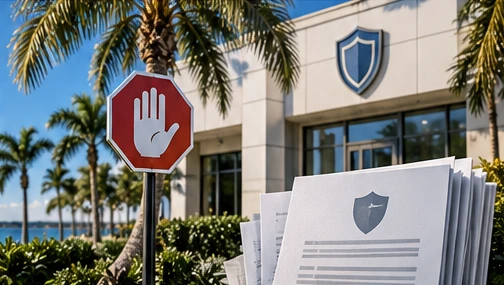
Florida Suspends Atlantic Coast Life New Business, but Existing Policies Still Need Service
The October 1 order distinguishes a business suspension from the insurer obligations already in force.
By Kseniya Dzigava ·
Pennsylvania Posts 2027 ACA Rates: Approved Changes Differ From Requests
The state table shows large differences by insurer. Its figures are not a quote for a household net premium.
By Kseniya Dzigava ·
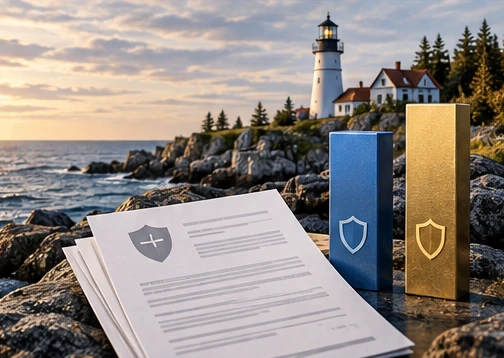
Maine 2027 Health Rate Table Separates Individual and Small-Group Increases
The approved weighted averages are 14.8% and 13.5%, with much wider ranges inside individual insurer filings.
By Kseniya Dzigava ·
Kroger Prescription Claims Close December 21, Not the October Opt-Out Date
Insurance-paid prescriptions are the focus. The $8,000 documentation threshold is not a promised payment.
By Kseniya Dzigava ·
Iowa Heating Aid Opens First for Priority Households, With a 30-Day Stay Route
The winter moratorium starts November 1 and requires qualification. It does not erase the utility bill.
By Kseniya Dzigava ·
Connecticut Heating Aid Lists $355 to $705 Basic Benefits for the New Season
The annual application is required, and payments usually go to the utility or fuel vendor.
By Kseniya Dzigava ·
90 Washington Street Rent Claims Require Action by November 2
The proposed agreement covers specified past tenancies in one building, not all Manhattan renters.
By Kseniya Dzigava ·
NYC Central Booking Claims Close October 19 After the Rights Deadline
The October5 exclusion and objection cutoff has passed; detention periods still define claims.
By Kseniya Dzigava ·
Gobi Heat Recall Offers a Refund or Larger Store Credit, Not Both
The October 1 notice identifies model UT3053 and a photo-based process. Battery disposal needs care.
By Kseniya Dzigava ·
LandTale Adult Bed Rails Have a Full-Refund Recall With Photo Requirements
SKU EBR001 is the identification clue. The notice calls for immediate stop-use, not a home repair.
By Kseniya Dzigava ·
Agrish Expands Bed-Rail Recall to Additional Units of Three Models
The October 1 reannouncement has a full-refund route. Check the model and updated scope.
By Kseniya Dzigava ·
Urban Arrow Cargo-Bike Recall Offers a Free Seat-Post Repair, Not a Refund
Specified models have a stop-riding instruction and a replacement saddle and seat post.
By Kseniya Dzigava ·
Magnetic Stick-Figure Recall Has a Disposal-Photo Refund Route
The GBYMIUY set is identified by X004TVHD2Z. CPSC says take the toys away from children now.
By Kseniya Dzigava ·
Michigan Allows Electronic Deposit Returns, but the Damage Notice Still Matters
The September 21 law adds a transfer route and a ten-day payment requirement after mailing the notice.
By Kseniya Dzigava · October 3, 2026
Michigan Clears a Narrow Route for CMS Patient Supports, Not General Cash Gifts
The newly effective law exempts authorized and sponsored model incentives from one state kickback provision.
By Kseniya Dzigava · October 3, 2026
Progressive Texas PIP Settlement Requires a Claim, Not Just an Old Policy
The January 19 deadline concerns payment timing on qualifying medical-bill items.
By Kseniya Dzigava · October 3, 2026
EFI Breach Settlement Offers a $75 Estimate or Loss Routes With Limits
Claims close December 22. The alternative payment replaces other cash benefits and can change.
By Kseniya Dzigava · October 3, 2026
Canoga Park Property Claims Close October 10. The Map and Ownership Dates Matter
The $75 million Northrop Grumman proposal is not a health payout or a citywide homeowner payment.
By Kseniya Dzigava · October 3, 2026
Dartmouth Breach Claims Close October 21. The $75 Payment Is an Estimate
The Oracle-related case covers people sent a Dartmouth incident notice, not every Oracle user.
By Kseniya Dzigava · October 3, 2026
IHRS Breach Claims Offer $45 or Documented Losses, With a December 2 Deadline
The affected-information class and claim credentials still matter even when receipts are not required for the flat cash route.
By Kseniya Dzigava · October 3, 2026
San Diego Water Settlement Needs No Claim, but Not Every Customer Gets Money
The proposed $40 million fund uses an overcharge calculation. November 12 is an opt-out or objection deadline.
By Kseniya Dzigava · October 3, 2026
ZAREI Camping-Shower Recall Has a Return-Based Refund Route
CPSC says stop using the recalled bucket-and-heater system. The refund process runs through Amazon or Walmart.
By Kseniya Dzigava · October 3, 2026
Cupcakes and Cashmere Lamp Recall Requires Photo Proof for a Refund
Two model families sold at HomeGoods are covered. Stop using and unplug the lamp before following the recall process.
By Kseniya Dzigava · October 3, 2026
California Creates a Seized-Crypto Return Route. It Is Not a Recovery Guarantee
The newly signed law concerns court-supervised distribution of assets already seized during investigations.
By Kseniya Dzigava · October 3, 2026
California Expands Data Deletion to Bought Information Starting January 1
SB 923 also adds an online request route for certain online-only businesses. Signed is not the same as effective today.
By Kseniya Dzigava · October 3, 2026
Virginia Adds 2027 Premium Savings. Federal Tax Credits Have Different Rules
The state aid targets a defined income band, and some lawfully present residents losing federal help may still have a route.
By Kseniya Dzigava · October 3, 2026
GetCoveredNJ Warns of 2027 Aid Changes. Coverage and Financial Help Differ
A September enrollment example is now past. Affected households need their current renewal and loss-of-coverage options.
By Kseniya Dzigava · October 3, 2026
Finastra Breach Claims Offer Two Cash Routes, Not Both
The November 27 deadline covers a defined notice-based class. The $2,500 limit requires documented losses.
By Kseniya Dzigava · October 3, 2026
Second Credit-Repair Refund Checks Are Mailing. The June 30 Test Is Already Past
The administrator says eligible first-check recipients may receive a second distribution during October.
By Kseniya Dzigava · October 3, 2026
New Sandoz Drug-Price Deal Totals $400 Million Over Years, Not an Immediate Check
The October agreement is separate from the earlier settlement pool and remains subject to court approval.
By Kseniya Dzigava · October 3, 2026
New Jersey Heating Aid Opens a New Season With a $98,602 Family-of-Four Limit
The application also covers USF, but eligibility and benefit amounts are not identical to the income ceiling.
By Kseniya Dzigava · October 3, 2026
States Sue Over Fuel-Economy Rollback. It Does Not Set Your Gas Price
The October 2 court challenge concerns future vehicle standards and disputed long-term savings.
By Kseniya Dzigava · October 3, 2026
NYC Opens Two Towing Restitution Routes With Different Deadlines
Breen Bros and Daniyyel Towing cases have separate funds. A complaint is not automatic approval.
By Kseniya Dzigava · October 3, 2026
ConnectOnCall Breach Claims Close November 2. Medical Monitoring Is Separate
The $4.95 million fund offers loss and cash options. After-hours provider communications matter to eligibility.
By Kseniya Dzigava · October 3, 2026
Venetian Website Settlement Has Two California Groups, Not Every Hotel Guest
Booking and browsing claims have different funds and estimated payments. Claims close November 24.
By Kseniya Dzigava · October 3, 2026
Dr. Squatch Natural-Label Settlement Opens a $9 Million Claims Route
Covered U.S. purchases have an August 29 cutoff. A class-action fund is not a blanket product refund.
By Kseniya Dzigava · October 3, 2026
Bestway Pool Claims Close October 30. A Settlement Does Not Replace Recall Rights
Specified 48-inch-and-taller pools have $40 or purchase-evidence payment routes.
By Kseniya Dzigava · October 3, 2026
Playstudios Settlement Has an October 21 Cash Election. Doing Nothing Means Coins
Six states have different purchase periods. Virtual currency and cash are not the same benefit.
By Kseniya Dzigava · October 3, 2026
High 5 Games Settlement Payments May Come in Rounds, Not One Fixed Check
Washington-related virtual-coin purchases face a January 4 deadline and a multi-year payment structure.
By Kseniya Dzigava · October 3, 2026
Laboratory Services Breach Claims Have a November 24 Deadline
The $6.1 million fund includes cash and monitoring. Maximum benefits are not guaranteed awards.
By Kseniya Dzigava · October 3, 2026
Security First Adds Smaller Deductibles. Lower Coverage Can Be a Tradeoff
October 1 HO5 changes include claim-free deductible reductions and wider coverage choices, not a universal premium cut.
By Kseniya Dzigava · October 3, 2026
Maryland Adds Medical-Hardship Tax-Sale Protection, Not Debt Forgiveness
The October 1 law requires a local application process and changes a separate homeowner-program value cap.
By Kseniya Dzigava · October 3, 2026
Maryland Transfer-on-Death Deeds Need Recording Before Death
A new property-transfer route is not a shortcut around liens, formalities or estate planning.
By Kseniya Dzigava · October 3, 2026
White House Announces $90 Medicare Payments. Two Groups Are Excluded
The one-time Part B payment is separate from ACA refunds. Early-October timing is an announced plan, not proof a payment has arrived.
By Kseniya Dzigava · October 3, 2026
Independent ATM Fees May Qualify for a New $167.5 Million Settlement
Claims are open through February 10. Bank-owned ATMs and fully reimbursed fees are different cases.
By Kseniya Dzigava · October 3, 2026
Homebuyer Commission Claims Close October 27. Sellers Have a Separate Case
The $120.3 million settlement has transaction-specific class periods. Payments may come in installments over several years.
By Kseniya Dzigava · October 3, 2026
Amazon Returns Settlement Has Automatic and Claim-Required Groups
This case is separate from Prime signup and D.C. delivery refunds. The live administrator sets a December 1 deadline.
By Kseniya Dzigava · October 3, 2026
Equifax Coding-Error Claims Are Open. $95 to $280 Is Only an Estimate
The March-April 2022 reporting issue has a specific class test. Claims close December 28, not when a headline appears.
By Kseniya Dzigava · October 3, 2026
Fort Wayne Medical Breach Claims Offer $40 or Documented-Loss Routes
October 27 is approaching. The cash alternative replaces other benefits, and monitoring depends on which information was exposed.
By Kseniya Dzigava · October 3, 2026
Pork Settlement Claims Close October 29. Not Every Product or State Qualifies
New settlements total $117.065 million. Earlier JBS and Smithfield claim windows are already closed.
By Kseniya Dzigava · October 3, 2026
Skin360 Face-Scan Claims Require Use in Illinois During a Specific Period
The $4.7 million privacy fund is shared. Claims close November 25, with a separate November 10 legal-choice deadline.
By Kseniya Dzigava · October 3, 2026
FastBucks Borrowers Have Until November 24 to Request Restitution
The recovered fund is about $964,000 gross. Notice IDs help, but no particular payment is promised.
By Kseniya Dzigava · October 3, 2026
Michigan Requires a Fee-Free Rent Payment Method, Not Every Method Free
The newly signed law limits mandatory payment surcharges. Electronic convenience options can still differ.
By Kseniya Dzigava · October 3, 2026

RealPage Rent Case Moves Forward. It Is Not a Rent Refund Order
The October 2 court update keeps key defendants in the antitrust case. The allegations still have to be proved.
By Kseniya Dzigava · October 3, 2026

Maryland Utilities Seek $160 Million in Customer Tax Benefits
BGE, Delmarva Power and Pepco still need regulatory review. The proposal is separate from the rate-plan pilot fight.
By Kseniya Dzigava · October 3, 2026
Massachusetts Heating-Aid Applications Open Before the Heating Season
The online window opened October 1 for November through April help. Applying is free and households must renew each year.
By Kseniya Dzigava · October 3, 2026

FTC Wine-Distributor Deal Targets Small-Retailer Pricing, Not Shopper Refunds
The October 2 proposed order creates monitored terms for specified transactions. Future payments depend on violations and the order taking effect.
By Kseniya Dzigava · October 3, 2026
Equinox Inc. Breach Claims Close October 23. Check the Notice, Not the Name
The class depends on being notified of the specific April 2024 incident. It is not every customer of a similarly named company.
By Kseniya Dzigava · October 3, 2026

FTC Sues Lens.com Over Hidden Charges. No Refund Form Yet
The October 2 case targets advertised prices, checkout fees and subscription disclosures. Allegations are not a final judgment.
By Kseniya Dzigava · October 3, 2026

UGI Gas Bills Rise in Two Steps. A Smaller Request Is Still an Increase
Pennsylvania approved a reduced rate settlement October 1. The example bill rises now and again in 2027.
By Kseniya Dzigava · October 3, 2026

Flo Privacy Claims Close October 15. The $59.5 Million Is a Shared Pool
Eligible historical app users need a valid claim. California subclass treatment differs, and final approval is still ahead.
By Kseniya Dzigava · October 3, 2026

Money Source Settlement: October 7 Is Not a Claim Deadline
The live administrator says confirmed class members receive payment without opting out. The approaching date governs exclusions and objections.
By Kseniya Dzigava · October 3, 2026

Lands' End Breach Claims Offer Two Cash Choices, Not Both
Claims close October 22. The expected $60 alternative differs from documented losses up to $5,000.
By Kseniya Dzigava · October 3, 2026

TransUnion Bankruptcy Settlement Has Two Groups and Different Claim Rules
October 30 is approaching. Some members have a $100 automatic route; higher estimated payments require a valid claim.
By Kseniya Dzigava · October 3, 2026

VSL#3 Claims Close October 20. Receipts Change the Payment Limit
The proposed probiotic settlement uses units purchased in a historical period. The $20-per-unit amount can adjust.
By Kseniya Dzigava · October 3, 2026
Pennsylvania Local Sales Tax Now Follows the Delivery Address
October 1 enforcement changes Philadelphia and Allegheny sourcing. The state's six-percent rate is not newly increased by this rule.
By Kseniya Dzigava · October 2, 2026

Maryland Limits Credit-Score Denials for Voucher Renters
October 1 protections separate the renter's own rent share from the subsidized total. Other lawful screening criteria still exist.
By Kseniya Dzigava · October 2, 2026

Maryland Rent Reporting Is Optional, and the Fee Has a Cap
October 1 leases at covered landlords must offer positive-payment reporting. This is not a promise that every credit score rises.
By Kseniya Dzigava · October 2, 2026

Maryland Changes When Landlords Can Check Criminal History
The October 1 Fair Chance Housing Act covers specified housing providers. A conditional offer often comes first, but exceptions matter.
By Kseniya Dzigava · October 2, 2026

Maryland's Rental Cooling Rule Has an 80-Degree Standard and Limits
The October 1 housing notice explains which apartments qualify. This is not an order to install air conditioning in every rental immediately.
By Kseniya Dzigava · October 2, 2026

Connecticut Tenants Cannot Be Billed for Unmetered Shared Utilities Under New Leases
October 1 leases and renewals face a new restriction. Including estimated utility costs in rent is a separate issue.
By Kseniya Dzigava · October 2, 2026
Connecticut Condo Owners Gain an Audit Route. They Pay for the Audit
October 1 rules need twenty-percent voting support and a specialist accountant's opinion. A suspicion alone does not trigger a free investigation.
By Kseniya Dzigava · October 2, 2026

Connecticut Adds a Civil-Penalty Tool for Rental Deposit Violations
October 1 law strengthens banking-commissioner enforcement. A potential penalty is not the tenant's automatic refund amount.
By Kseniya Dzigava · October 2, 2026

Minnesota's Cold Weather Rule Is Not an Automatic Shutoff Ban
The October 1 season protects qualifying heat-related service when customers make and keep an agreed payment plan. Missed payments still matter.
By Kseniya Dzigava · October 2, 2026

D.C. Pet-Rent Limits Start Applying, but Pet-Free Buildings Still Exist
Current legal guidance explains October 1 implementation. Deposits and monthly pet rent have different caps, and assistance animals are a separate category.
By Kseniya Dzigava · October 2, 2026

Nevada Releases 2027 Health Rates. Off-Exchange Plans Miss Federal Aid
The October 1 notice reports different market averages. October comparison shopping precedes November enrollment, and the net premium needs a subsidy check.
By Kseniya Dzigava · October 2, 2026

Colorado Springs Winter Peak Rates Drop. Your Whole Bill Will Not Halve
October 1 brings a lower on-peak energy rate and a fuel adjustment. The utility's nearly 50-percent figure concerns one rate component.
By Kseniya Dzigava · October 2, 2026

Maryland Ends Its Multi-Year Utility Rate Pilot. Refunds Are Not Automatic
The October 1 order criticizes unachieved benefits. It does not end every future forecast-based rate proposal or award a household refund.
By Kseniya Dzigava · October 2, 2026

Minnesota AG Questions Who Pays for Google's Data-Center Power
October 1 comments challenge Xcel's proposed agreement. The claimed billion-dollar risk is a disputed regulatory position, not an approved household charge.
By Kseniya Dzigava · October 2, 2026

CVS Privacy Settlement Offers Up to $10, Not $20.5 Million per Claim
October 1 reporting highlights a November 16 deadline. The administrator confirms smaller per-person amounts and pending final approval.
By Kseniya Dzigava · October 2, 2026

McLean Breach Settlement: $45 Cash and Documented Losses Are Different Choices
October 2 reporting points to December 10 claims. The administrator sets proof requirements and caps, with final approval still pending.
By Kseniya Dzigava · October 2, 2026
Connecticut's New Pricing Law Does Not Ban Every Dynamic Price
October 1 rules target personal-data-based surveillance pricing and require specified disclosures. Delivery distance and ordinary supply-demand differences have exceptions.
By Kseniya Dzigava · October 2, 2026

Connecticut Workers Get More Specific Monitoring Notices
October 1 changes require covered workplace locations and new-hire statements. Security and misconduct exceptions mean the rule is not a total surveillance ban.
By Kseniya Dzigava · October 2, 2026

Connecticut Creates Veterans' Dental Help. Applications Start in January
The law's October 1 effective date is not the application opening. The enacted cap is $3,000 yearly, with eligibility and treatment-plan checks.
By Kseniya Dzigava · October 2, 2026

Connecticut Waives More Verified Veterans' License and ID Fees
October 1 provisions cover an original driver's license and specified ID cards. They do not erase every renewal fee or traffic charge.
By Kseniya Dzigava · October 2, 2026

Wyoming Heating Aid Opens With a New Crisis-Payment Test
The 2026-27 program requires a verifiable recent utility payment for crisis assistance. Seasonal help does not cover bills from before October 1.
By Kseniya Dzigava · October 2, 2026

IndyEAP Applications Open, but Water Bills Are Not Covered
Marion County applicants need a new application each year. The program distinguishes the October application opening from November utility payments.
By Kseniya Dzigava · October 2, 2026

Seattle Sets a $22.14 Wage Floor. The City Boundary Matters
The September 28 notice applies January 1, 2027. Washington's separate state minimum is lower, so place of work matters more than a Seattle mailing address.
By Kseniya Dzigava · October 2, 2026
Florida's $15 Wage Floor Is Now in Effect. Tips Do Not Erase the Minimum
September 30 completed the voter-approved phase-in. The tipped cash rate is separate, and workers can check whether pay plus tips meets the full floor.
By Kseniya Dzigava · October 2, 2026

Michigan Bans Insurance Pricing Based on How Much You Will Tolerate
A September 21 law targets unjustified price-tolerance adjustments. It does not ban every difference between two policyholders' premiums.
By Kseniya Dzigava · October 2, 2026

California's New Auto-Glass Law Targets Surprise Costs and Calibration Gaps
The newly signed SB988 requires estimates and ADAS disclosures. It also restricts assigning insurance rights under covered 2027 contracts.
By Kseniya Dzigava · October 2, 2026

California Signs a Mental-Health Insurance Parity Backstop
AB2011 preserves treatment-access protections in state law. It is not a promise that every requested therapy is covered without review.
By Kseniya Dzigava · October 2, 2026
California Expands the Coverage Route for Injectable HIV Prevention
SB1023 requires covered non-self-administered prevention products through medical and drug benefits for specified 2027 policies. It is not a universal free-drug promise.
By Kseniya Dzigava · October 2, 2026

Arizona Debt-Relief Letters Are Arriving. There Is No Application Fee
October 2 reporting revisits an existing medical-debt program. The state FAQ says qualifying accounts are selected from participating providers' portfolios.
By Kseniya Dzigava · October 2, 2026

Treasury's New Money-Education Plan Puts Digital Scams on the List
The October 2 national strategy names digital financial literacy and fraud education priorities. It does not create a new reimbursement fund.
By Kseniya Dzigava · October 2, 2026

Florida Approves a 12.8% Renters-Insurance Cut at American Modern
The October 2 announcement covers about 121,898 exposures. New policies and renewals get the new rate from October 11, not every renter in the state.
By Kseniya Dzigava · October 2, 2026

California Cash Purchases Will Round to Nickels. Card Payments Will Not
The newly signed Common Cents Act starts July 1, 2027. The rule rounds the final total, includes refunds and preserves noncash payment amounts.
By Kseniya Dzigava · October 2, 2026

California Limits How Genetic Tests Can Affect Life-Insurance Prices
AB 1798 takes effect January 1, 2027. The protection is not a ban on considering a diagnosed disease or a promise of automatic coverage.
By Kseniya Dzigava · October 2, 2026

California Changes How Borrowers Receive Interest on Held Insurance Money
AB 1278 allows specified interest to be paid directly to the borrower. The underlying two-percent requirement is not newly created by this amendment.
By Kseniya Dzigava · October 2, 2026

An ETF Transfer Is Not a Guaranteed Escape From Capital-Gains Tax
Revenue Ruling 2026-20 treats a specified planned exchange as taxable. A separate notice considers broader action but does not finalize every future rule.
By Kseniya Dzigava · October 2, 2026

Hennepin Energy Assistance Opens a New Season. Applying Is Not Payment
The local program covers October 1 through May 31. Funding timing, income documentation and a separate crisis request matter.
By Kseniya Dzigava · October 2, 2026

Walmart Recalls 4.4 Million Grill Brushes. Five Models Qualify for Refunds
The October 1 recall covers specified Expert Grill wire-bristle models, not every grill accessory. Stop use and match the model before seeking a remedy.
By Kseniya Dzigava · October 2, 2026

HotHands Rechargeable Warmers Get a Refund Recall. Do Not Put Them in the Trash
The October 1 notice covers model H163650 rechargeable units, not ordinary disposable packs. A claim number and marked-product photos are part of the process.
By Kseniya Dzigava · October 2, 2026

Dollar Tree's $17 Balloon Pump Is Recalled. Online Buyers Get a Return Route
The October 1 notice covers model 406198. Store purchases and online purchases have different return steps for the full refund.
By Kseniya Dzigava · October 2, 2026

A $10 Dumpling Toy Has a Water-Bead Recall and Photo-Based Refund
The October 1 LLK Trading notice covers about 480 Mochi Malrang toys sold at Easy Wholesale in San Jose. It is not a recall of every squishy toy.
By Kseniya Dzigava · October 2, 2026

That Small Pay-Advance Fee Can Add Up to a 232% APR
An October 2 consumer-advocacy study finds frequent fees and repeat borrowing. Its cost estimates cover direct-to-consumer apps, not every employer-payroll product.
By Kseniya Dzigava · October 2, 2026
Student-Loan Autopay Discount Gets Three More Months to Sign Up
Education extended enrollment to December 31. Eligible borrowers must stay enrolled, and defaulted loans need a separate return to good standing.
By Kseniya Dzigava · October 2, 2026

21,586 New York Households Applied for Lower Utility Bills. Not All Are Approved
September 30 figures show an enrollment surge. Some qualifying benefit recipients must still self-enroll instead of assuming the discount is automatic.
By Kseniya Dzigava · October 2, 2026

Maine Electric-Bill Help Moves to Monthly Discounts
October changes replace lump-sum credits for covered CMP and Versant customers. Reported automatic enrollment does not mean every household gets the maximum.
By Kseniya Dzigava · October 2, 2026

California Opens Property-Tax Postponement. It Is a Loan, Not Free Money
The October 1 window can help qualifying older or disabled homeowners. Five-percent interest and a property lien are part of the program.
By Kseniya Dzigava · October 2, 2026

New Jersey Property-Tax Relief Has a November 2 Deadline
October 2 reporting highlights filing help. Seniors and disability recipients should not assume the state filed their combined application automatically.
By Kseniya Dzigava · October 2, 2026

Washington Sets a $17.73 Wage Floor and Higher Overtime Salary Tests
The September 30 announcement applies January 1, 2027. Larger and smaller employers have different salary thresholds, and local wage floors can be higher.
By Kseniya Dzigava · October 2, 2026

Illinois Finds $9.3 Million in Lost Insurance Benefits. The Search Is Free
The September 30 announcement describes money returned this year through the Life Policy Locator. It is not a new refund pool anyone can join.
By Kseniya Dzigava · October 2, 2026

Rhode Island Cut Insurers' Requests. Your Health Premium Can Still Rise
September 29 approvals set different increases across three markets. New state help for eligible marketplace customers is separate from the premium rate.
By Kseniya Dzigava · October 2, 2026
California Moves Its Job-Exit Debt Rules to 2027 Contracts
A new amendment changes when the stay-or-pay restrictions apply and adds exceptions. Do not treat every existing repayment clause as automatically void.
By Kseniya Dzigava · October 2, 2026
SNAP Has a New $1,023 Ceiling. It Is Not Every Family's Check
October 1 changes raise several food-benefit limits, while Hawaii moves in the other direction. Household size and location still matter.
By Kseniya Dzigava · October 2, 2026
Illinois Opens Heating-Bill Help. Some Households Can Apply Before November
The October 1 priority window covers older adults, disability, young children and certain urgent utility situations. Funding can run out.
By Kseniya Dzigava · October 2, 2026
Facing a Utility Shutoff? A New Grant Window Just Opened
Dollar Energy Fund opened its hardship year October 1. Grants go to utility accounts, and each participating utility has its own limits.
By Kseniya Dzigava · October 2, 2026
Cashless Checkout? Maryland Just Added a Right to Pay With Cash
The October 1 rule covers certain essential-goods purchases. It is not a requirement for every store, transaction or denomination.
By Kseniya Dzigava · October 2, 2026
Maryland Takes Aim at Grocery Prices Picked Just for You
October 1 rules limit certain personalized food markups and require algorithm-pricing disclosures elsewhere. Discounts and exceptions remain.
By Kseniya Dzigava · October 2, 2026
Skip the Boss's Political Meeting? Maryland Adds Job Protection
The October 1 Worker Freedom Act limits retaliation for refusing certain employer opinion meetings. Required training and other exceptions remain.
By Kseniya Dzigava · October 2, 2026
A 1099 Is Not the Final Word: New Jersey's Worker Rules Begin
October 1 starts clarified ABC-test regulations. Classification can affect wage and unemployment rights, not just a tax label.
By Kseniya Dzigava · October 2, 2026
Michigan Teen Jobs Get a New Permit Portal Today
YEPP becomes required October 2. Valid school-issued permits survive, but changing employers requires a new permit.
By Kseniya Dzigava · October 2, 2026
Washington Workers Must Hear About I-9 Inspections Before the Fallout
October 1 notice and retaliation protections cover federal record inspections. The deadline is five business days, not a blanket immigration shield.
By Kseniya Dzigava · October 2, 2026
No Retirement Plan at Work? Rhode Island's First Enforcement Deadline Is Near
October 15 is the date for employers with more than 100 eligible employees. Employee opt-out choices remain part of RISavers.
By Kseniya Dzigava · October 2, 2026
South Carolina Adds Paid Leave for More State Parents
October 1 changes expand qualifying employment and set four-week leave for specified parents. Event dates and employment categories matter.
By Kseniya Dzigava · October 2, 2026
North Carolina State Workers Get a 12-Week Parental-Leave Boost
The October 1 workforce overhaul expands public benefits and hiring routes. It does not give every North Carolina employee the same entitlement.
By Kseniya Dzigava · October 2, 2026
DC Paid Leave Just Got Smaller: Check the New $1,100 Cap
Official October 1 guidance reduces medical and family leave limits. Parental leave stays at twelve weeks, without new worker deductions.
By Kseniya Dzigava · October 2, 2026
California Says AI Cannot Be the Only Boss Behind a Firing
September 30 signatures add human-review protections. The key firing safeguard starts July 2027, not immediately.
By Kseniya Dzigava · October 2, 2026
Can't Decode Your Overtime Pay? Connecticut Now Requires a Guide
October 1 rules require covered employers with at least 100 employees to explain codes and name a dispute contact. They do not create new premiums.
By Kseniya Dzigava · October 2, 2026
Assaulted on the Job? Connecticut Expands Full-Pay Protection
October 1 changes address qualifying incapacity after assaults on specified health and education workers. They do not cover every workplace injury.
By Kseniya Dzigava · October 2, 2026
Tips Cannot Fill the Wage Gap for Connecticut Cannabis Workers
The October 1 change bars gratuities from meeting the statutory minimum in covered cannabis employment. It does not ban tipping.
By Kseniya Dzigava · October 2, 2026
Pumping at Work No Longer Has to Fit Only Inside Existing Breaks in Connecticut
October 1 changes require reasonable additional break time. The new provision alone does not settle every question about paid time.
By Kseniya Dzigava · October 2, 2026
Mandatory Security Checks Count as Work Time Under New Connecticut Rule
The October 1 amendment adds employer-required screening to hours worked under state overtime law. Record the time outside your scheduled shift.
By Kseniya Dzigava · October 2, 2026
Amazon Owes $7.25 Million in DC Delivery Refunds. This Is Not the FTC Prime Payout
An October 1 settlement covers delivery exclusions in ZIP codes 20019 and 20020. Eligible residents should receive notices in the coming weeks, not assume every Prime member qualifies.
By Kseniya Dzigava · October 2, 2026
California Lyft Deal Covers Past Driver Work, Not a New Classification Rule
The $272.5 million settlement still needs court approval. Its covered period ends in December 2020, and payment resources are not yet announced.
By Kseniya Dzigava · October 2, 2026
NYC Click-to-Cancel Enforcement Starts. The Fine Is Not Your Automatic Refund
The October 1 rule targets subscription traps and adds a complaint route. It is a city protection, not a nationwide cancellation law.
By Kseniya Dzigava · October 2, 2026
State Farm Dividend Guidance: $142 Is a Delaware Average, Not a Guaranteed Check
Delaware issued new payment guidance October 1. The national dividend and prior rate cuts are different benefits with different timing.
By Kseniya Dzigava · October 2, 2026
IRS Scholarship-Credit Rules Are Proposed. A Donation Is Not a Tuition Refund
October 1 regulations prepare a 2027 nonrefundable credit for qualifying scholarship contributions. Eligibility and approved organizations still matter.
By Kseniya Dzigava · October 2, 2026
Treasury Says Child Accounts Are Enrolled. Parents Still Have to Claim Them
The October 1 announcement separates account creation from control and seed-contribution eligibility. It does not promise $1,000 to every child.
By Kseniya Dzigava · October 2, 2026
ACA $500 Payments Have Started, but Most Marketplace Enrollees Are Not the Target
September 30 reporting says disbursement began for a limited unsubsidized group in 30 federal-exchange states. It is separate from premium subsidies and insurer rebates.
By Kseniya Dzigava · October 2, 2026
Connecticut Job Ads Must Show Pay and Benefits Under Newly Effective Law
October 1 changes require wage information in internal and public postings. A posted range is a disclosure, not a promise of its highest salary.
By Kseniya Dzigava · October 2, 2026
Connecticut Expands Job-Exit Debt Ban to Small Employers
The October 1 law removes the old employer-size threshold for certain employment promissory notes. Advances and other statutory exceptions remain.
By Kseniya Dzigava · October 2, 2026
Freddie Mac Mortgage Average Rises to 7.28%. Your Quote Can Differ
The October 1 survey rose from 7.03% a week earlier. It describes a specific conventional-loan borrower profile, not every mortgage or APR.
By Kseniya Dzigava · October 2, 2026
New Student-Loan Default Portal Offers a Way Back, Not Automatic Forgiveness
Treasury and Education launched a default-support portal September 30. Borrowers can apply for rehabilitation or consolidation, but a portal visit does not clear a default.
By Kseniya Dzigava · October 1, 2026
Canceled Student Loans Still on Credit Reports? Borrowers Take the Fight to Court
A September 24 proposed class action alleges discharged loans remain reported as debt. Its $4.6 billion estimate is a plaintiffs-side claim, not a court finding.
By Kseniya Dzigava · October 1, 2026
Colorado Medical-Debt Deal Undoes Default Judgments on 44 Accounts
Wakefield must vacate affected judgments and satisfy legal notice and evidence rules before seeking new ones. The settlement does not wipe out every medical bill.
By Kseniya Dzigava · October 1, 2026
Paid Before Charity Care Approval? Washington Deal Returns Money to 1,300 Patients
Puget Sound Physicians will issue refunds with interest after a $410,000 settlement. Individual amounts vary, and the average is not a guaranteed check.
By Kseniya Dzigava · October 1, 2026
Texas Hospital Investigation Finds Bills Often Arrive Before Aid Screening
An October 1 analysis of 166 nonprofit hospitals finds major gaps in when aid is offered and whether prior payments are returned. Written policies are not the same as actual outcomes.
By Kseniya Dzigava · October 1, 2026
Kansas City Debt Reporting Shows Why a Hospital Summons Cannot Wait
October 1 reporting cites thousands of tracked Missouri medical-debt cases and frequent defaults. The sample is incomplete, not a statewide lawsuit rate.
By Kseniya Dzigava · October 1, 2026
Hospital Drug Discounts Exist, but Patient-Aid Policies Are Often Unclear
A new Temple study finds only 13 of 75 sampled 340B hospitals clearly describe drug assistance. Industry funding and the revenue-based sample limit what the finding proves.
By Kseniya Dzigava · October 1, 2026
Pennsylvania Mavis Customers Have Until January 26 to Support a Restitution Claim
A September 28 settlement sets aside $190,000 for harmed consumers. Complaints need support, and filing does not guarantee a payment.
By Kseniya Dzigava · October 1, 2026
California Signs Tougher Disaster-Claims Rules, but They Start in January
SB 876 adds insurer planning, status updates and restitution protections. The new law does not make every delayed claim an immediate payout today.
By Kseniya Dzigava · October 1, 2026
Washington Challenges a Power-Benefit Change That Could Raise Private-Utility Bills
The attorney general opposes a BPA formula change affecting Avista, PacifiCorp and PSE customers. A possible 4% impact is not an approved bill increase.
By Kseniya Dzigava · October 1, 2026
California's Used-Car Return Right Starts Today, With Mileage and Fee Limits
The CARS Act gives qualifying used-car buyers and lessees three days to cancel. It is not a no-cost return for every vehicle or every transaction.
By Kseniya Dzigava · October 1, 2026
October Medicaid Changes: California, Maryland and Rhode Island Have Different Safety Nets
New eligibility changes begin October 1, but state-funded coverage and exceptions differ. A federal funding change does not mean every noncitizen loses all care.
By Kseniya Dzigava · October 1, 2026
New Jersey Announces $16.48 Minimum Wage. Tipped Workers Still Need the Full Floor
Most employees' minimum rises January 1, 2027. Separate small-employer, farm, care-worker and tipped rates mean not every paycheck uses the same figure.
By Kseniya Dzigava · October 1, 2026
Worcester Adds Evening and Saturday Small Claims Sessions
A new optional virtual pilot aims to reduce missed appearances. It does not move an existing hearing unless the court actually assigns or approves the change.
By Kseniya Dzigava · October 1, 2026
CUNY's New Free-Transit Pilot Starts October 5, but Only 700 Students Got the First Slots
The city-funded OMNY pilot has eligibility rules and a waitlist. It is not free unlimited transit for every CUNY student.
By Kseniya Dzigava · October 1, 2026
IRS Travel Per Diem Changes Today. The $329 Rate Is Not a Tax Refund
Notice 2026-60 sets new high-low substantiation rates and locality periods. The method does not make every trip deductible or require every employer to pay the maximum.
By Kseniya Dzigava · October 1, 2026
SEC Proposes Wider Private-Market Access. Fees and Exit Terms Still Matter
September 30 proposals address performance pay, interval funds and investor qualification. They are not final rules or a promise of easier withdrawals.
By Kseniya Dzigava · October 1, 2026
ADP Reports 90,000 New Private Jobs. Pay Growth Is a Separate Number
The September payroll report shows different gains for job-stayers and job-changers. It is a private-sector estimate, not the federal jobs report or a promised raise.
By Kseniya Dzigava · October 1, 2026
Equifax Sees a Small Financial-Health Improvement. Good Credit Still Is Not a Cash Cushion
The new Q2 index rises from 60.9 to 61.3. It is a proprietary composite measure, not proof that household debt stress has ended.
By Kseniya Dzigava · October 1, 2026
Debt Payments Ate Half of Estimated Income Gains, New Study Says
A September 29 analysis compares credit records with neighborhood income estimates. Its 52-cent finding is a modeled average, not a measurement of every worker's paycheck.
By Kseniya Dzigava · October 1, 2026
Washington Fines USAA and Allstate. The $230,000 Is Not a New Refund Pool
Washington cites claims-handling and premium-notice violations. Separate USAA payments on 158 claims followed an earlier review, not a newly opened settlement application.
By Kseniya Dzigava · October 1, 2026
IRS Extends Israel-Related Tax Relief to 2027. Prior Eligibility Is Not Enough
Notice 2026-63 postpones covered deadlines for eligible taxpayers. People relying on an earlier notice must also qualify under the new notice for the further extension.
By Kseniya Dzigava · October 1, 2026
Mortgage Appraisal Format Gets an Exception, Not a Blanket Delay
Fannie Mae and Freddie Mac offer a requested transition exception for lenders. The November 2 UAD 3.6 mandate still stands for sellers without an approved exception.
By Kseniya Dzigava · October 1, 2026
Got an IRS Saver's Match Letter? It Is Not a $1,000 Check Today
IRS CP321J notices flag possible eligibility for a retirement contribution match starting in 2027. A notice is not approval, and the benefit goes to a retirement account.
By Kseniya Dzigava · September 30, 2026
Lowe's California Settlement: Gift Cards Under $15 Can Be Cashed Out
A $546,600 settlement requires staff training and cash-out notices. The enforcement payment is not a $546,600 pool of checks for shoppers.
By Kseniya Dzigava · September 30, 2026
Kin Adds California HELOCs. Paying Off Cards Still Puts Your Home at Risk
Kin says its California credit lines can reach $750,000. Fast approval claims do not settle the rate, fees or risk of converting unsecured debt into home-secured borrowing.
By Kseniya Dzigava · September 30, 2026
New York Seeks Evolutions Festival Refunds. The Lawsuit Is Not a Payout Yet
New York alleges organizers kept more than $243,000 in advance ticket sales after canceling the 2025 festival. Refunds and future-event protections are being sought in court.
By Kseniya Dzigava · September 30, 2026
Home Prices Rose in July, but Chicago and Seattle Tell Different Stories
Fresh FHFA and Case-Shiller releases show national gains alongside large regional differences. Neither report tells you today's asking price or a particular home's value.
By Kseniya Dzigava · September 30, 2026
CFPB Funding Ruling Protects a Consumer Tool, but the Court Fight Continues
State attorneys general say an Oregon court rejected the bureau's refusal to request funding. The ruling does not resolve an individual complaint or guarantee relief.
By Kseniya Dzigava · September 30, 2026
O'Reilly Text Settlement Claims Close Today: Who May Get Up to $22
A proposed O'Reilly Automotive text-message settlement has a September 28 claim deadline. Eligibility is narrow, payment is not guaranteed, and court approval remains pending.
By Kseniya Dzigava · September 28, 2026
Selling Farmland? IRS Proposes How Four-Year Tax Payments Would Work
The IRS released proposed rules September 28 for qualifying farmland sellers to pay tax on gain over four annual installments. The proposal is not a general tax extension.
By Kseniya Dzigava · September 28, 2026
Mortgage Delinquencies Hit 3.53% in August: What the Headline Leaves Out
ICE's September 28 first look says August mortgage delinquency rose to 3.53%, partly a calendar effect, while serious late payments rose year over year.
By Kseniya Dzigava · September 28, 2026
FTC's Corteva Deal Targets Pesticide Prices, Not Immediate Farmer Refunds
A September 28 proposed FTC-Corteva order would end certain distributor loyalty terms for 10 years. Farmers may gain generic choices, but no personal refund was announced.
By Kseniya Dzigava · September 28, 2026
Fed Proposes Full Reserves for Stablecoins, but the Rule Is Not Final
The Fed's September 24 proposals would set reserves, capital and application rules for issuers it supervises. The comment window depends on Federal Register publication.
By Kseniya Dzigava · September 28, 2026
Amway's Proposed $225 Million FTC Deal Is Not a Refund Form Yet
The FTC says a proposed Amway settlement would fund redress for harmed sellers and change recruitment practices. No claim instructions were announced in the September 17 release.
By Kseniya Dzigava · September 28, 2026
FleetCor's $100 Million FTC Deal Could Repay Businesses, but Not Yet
The FTC's September 17 proposed FleetCor/Corpay order sets aside $100 million for harmed fuel-card customers. Comment and refund mechanics are still pending.
By Kseniya Dzigava · September 28, 2026
New York Orders $1 Million-Plus in DARCARS Refunds. Check Your Paperwork
Two Westchester DARCARS dealers must reimburse eligible buyers and lessees for sales-commission and add-on charges, says the NY attorney general's September 16 settlement.
By Kseniya Dzigava · September 28, 2026
Brooklyn Rental Applicants May Get Deposits Back After Blacklisting Case
A September 18 New York settlement requires $150,000 in restitution for certain apartment applicants and bans the firm's use of housing-court history in screening.
By Kseniya Dzigava · September 28, 2026
OCC: 97.7% of Tracked Mortgages Performed, but Foreclosure Starts Rose
OCC's September 23 mortgage report covers about 18.8% of U.S. residential mortgage debt. It found 97.7% current and performing in Q2, while new foreclosures increased.
By Kseniya Dzigava · September 28, 2026
Florida Clears Four Home Insurance Rate Cuts. Will Your Renewal Be Cheaper?
Florida says four approved insurer rate decreases affect more than 62,000 policies. The cuts take effect at renewal and do not guarantee a lower bill for every homeowner.
By Kseniya Dzigava · September 28, 2026
Paid a Surprise Maryland Hospital Fee? Some UMMS Patients Are Getting Refunds
A Maryland settlement will return $2.25 million in outpatient facility fees to eligible UMMS patients. Who qualifies, when checks are expected and what the state says.
By Kseniya Dzigava · September 27, 2026
Bought a Generic Drug Years Ago? Check This $96 Million Settlement Before March 8
A multistate generic-drug settlement has a March 8, 2027 claim deadline. Check the covered drugs, 2009-2019 purchase window and eligibility before filing.
By Kseniya Dzigava · September 27, 2026
Amazon Prime Refunds Expand to $200; More Checks Start October 1
A revised FTC-Amazon order raises the Prime refund cap to $200 and adds automatic payments starting October 1, 2026. Who may be included and how to avoid refund scams.
By Kseniya Dzigava · September 27, 2026
Colorado Health Premiums Rise 10% for 2027, but Subsidized Bills Tell Another Story
Colorado approved an average 10% individual-market premium rise for 2027. State assistance may limit the average net increase for aided shoppers; your bill depends on plan and eligibility.
By Kseniya Dzigava · September 27, 2026
New York Wants to Shut Polymarket Down: What the Lawsuit Actually Says
New York sued Polymarket, alleging unlicensed gambling and seeking a shutdown, penalties and restitution. The allegations are contested, not a court ruling or an approved refund.
By Kseniya Dzigava · September 27, 2026
Storm Price Gouging in New York: What to Document Before You Complain
State alert explains the emergency-pricing standard and what a useful complaint records.
By Kseniya Dzigava · September 26, 2026
Michigan's Attorney General Fights the UPPCO Electric Rate Hike
A proposed 15.6% residential increase is not approved; state advocates a smaller increase.
By Kseniya Dzigava · September 26, 2026
Did You Pay a Generator Deposit? Michigan Sues the Sellers
State alleges customers paid deposits but did not receive generators or refunds.
By Kseniya Dzigava · September 26, 2026
Bank Closed in California? Nano Banc Deposits Move to Sunwest
What customers can use this weekend and when the only branch reopens.
By Kseniya Dzigava · September 26, 2026
Maryland Approves 2027 ACA Rates: Average Hike of 14.6% Before Subsidies
Regulator figures show why a market average and a household bill differ.
By Kseniya Dzigava · September 26, 2026
The Free IRS Mobile App Now Shows Account Notices and Tax Records
Official app adds selected account features; watch for tax-account lookalikes.
By Kseniya Dzigava · September 26, 2026
Fake Celebrity Ads Everywhere? The FTC Weighs Making Platforms Responsible
Agency seeks evidence about ad tools and impersonation scams. No new platform rule has taken effect.
By Kseniya Dzigava · September 25, 2026
Disaster-Area Tax Deadline: Apache Taxpayers Have Until September 28
Eligible taxpayers in the San Carlos Apache Tribe disaster area have a September 28 deadline for many postponed filings and payments.
By Kseniya Dzigava · September 25, 2026
Hawaii Joins Proposed Credit Acceptance Auto-Loan Settlement With Debt Relief
Proposed multistate settlement offers potential cash restitution and debt relief for eligible Credit Acceptance borrowers.
By Kseniya Dzigava · September 25, 2026
A Debt Collector's Data Breach Costs It $2.3 Million in a Multistate Deal
Forty-four states reached an agreement with Labcorp over patient data held by a medical debt collector.
By Kseniya Dzigava · September 25, 2026